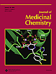

Introduction
The development of new antiretroviral drugs is a dynamic process that is continuously fueled, at the basic level, by the identification of new molecular targets for chemotherapeutic intervention and at the clinical level by the problems (i.e., adherence, tolerability, toxicity, virus-drug resistance) encountered with existing drugs. En route from their discovery as new anti-HIV entities to their eventual use for the treatment of HIV infection, new antiretroviral drugs have to cross many hurdles, and at each point of the developmental process, emerging pitfalls have to be balanced against potential benefits at the end. This makes it often unpredictable or at least unforeseeable as to which compounds would make it all the way from the beginning till the end, the final approval for clinical use.
Here, I will discuss a number of strategies for the chemotherapy and chemoprophylaxis of HIV infections, based on new compounds that have recently entered the antiretroviral arena. Some of these compounds have just been identified as anti-HIV agents; others have already gone through the whole developmental process to their final approval as antiretroviral drugs. This review on new trends and approaches toward antiretroviral drugs is not meant to be exhaustive but rather exemplary for the different strategies that could be pursued and those that have already proved to be successful. These strategies are focused on the following targets: (i) CD4 as the primary cell receptor for viral entry into the cell; (ii) gp120 as the viral glycoprotein involved in virus adsorption to the cells; (iii) CXCR4 and CCR5 as the coreceptors for viral entry; (iv) gp41 as the viral glycoprotein required for virus-cell fusion; substrate (dNTP) binding site of HIV reverse transcriptase as the point of interaction for the (v) NRTIs (“nucleoside reverse transcriptase inhibitors”) and (vi) NtRTIs (“nucleotide reverse transcriptase inhibitors”); (vii) nonsubstrate binding site of the HIV-1 reverse transcriptase as the point of interaction for the NNRTIs (“non-nucleoside reverse transcriptase inhibitors”); (viii) integration of the proviral DNA into the host cell genome by the HIV integrase; (ix) proviral DNA expression (transcription, transactivation); and (x) HIV protease as the target for both peptidomimetic and nonpeptidic inhibitors of the HIV protease. For a comprehensive review on new anti-HIV agents in preclinical or clinical development, see ref 1.
Cellular CD4 Receptor Down-Modulators
The CD4 cell surface molecule serves as the primary receptor for HIV infection of its target cells, and thus, drugs that target the CD4 receptor, thereby inhibiting viral entry into the cells, may be considered an attractive approach toward prevention of HIV infection. Cyclotriazadisulfonamide (CADA) (
1)
was recently shown to inhibit HIV (as well as human herpesvirus type 7) infection by down-modulation of the cellular CD4 receptor.
2 The antiviral activity of a large series of varying
CADA derivatives correlated closely with their ability to down-modulate CD4 receptor expression.
3 CADA is specific for the CD4 receptor; it was not found to alter the expression of any other cellular receptor (i.e., CXCR4, CCR5). Time course experiments revealed that CADA in its mechanism of action differs from that of aurintricarboxylic acid, which binds directly to CD4 and phorbol myristate acetate, which activates protein kinase C
2; CADA is assumed to down-regulate CD4 expression at the (post)translational level.
3 Further pertaining to the promising character of CADA as an anti-HIV agent was the observation that it proved synergistic in its anti-HIV activity when combined with NRTIs (i.e., zidovudine, lamivudine, zalcitabine, abacavir), NtRTIs (i.e., tenofovir), NNRTIs (i.e., nevirapine, delavirdine), PIs (protease inhibitors lopinavir, saquinavir, indinavir, nelfinavir, amprenavir. and ritonavir), as well as the gp41 fusion inhibitor T-20 (enfuvirtide), the CXCR4 antagonist AMD3100, and the mannose-specific plant lectins from
Galanthus nivalis (GNA) and
Hippeastrum hybrid (HHA).
4 Virus Attachment Inhibitors
The above-mentioned plant lectins derived from GNA (Snowdrop) and HHA (Amaryllis) were shown to interrupt the viral entry process by interfering with the viral envelope glycoprotein gp120.5 In fact, when HIV-1 was made resistant to GNA and HHA following repeated passages in the presence of the compounds, several amino acid changes were noted in gp120 but not gp41; the vast majority of these amino acid changes occurred at the N-glycosylation sites (at the S or T residues), and the degree of resistance to the plant lectins invariably correlated with an increasing number of mutated glycosylation sites.6 There was no cross-resistance of plant lectin-resistant viruses to other viral entry inhibitors such as dextran sulfate, bicyclams (i.e., AMD3100), chicoric acid, or T-20 (enfuvirtide). The plant lectins represent a unique class of anti-HIV agents with an entirely novel HIV drug resistance profile;6 they are endowed with a number of interesting properties (i.e., availability, formulation, stability, efficacy, safety) that make them primary candidate drugs to be considered for potential topical use as microbicides for the prevention of the sexual transmission of HIV infection.5
Equally well qualifying as a potential microbicide to prevent the transmission of HIV and AIDS is cyanovirin-N (
2, Chart 1
), a 11 kDa protein originally isolated from the cyanobacterium
Nostoc ellipsosporum.
7 Cyanovirin-N has a uniquely high affinity for gp120: it impairs both CD4-dependent and -independent binding of gp120 to the target cells; it blocks CD4-induced binding of gp120 with CXCR4, and it dissociates bound gp120 from target cells.
8 Cyanovirin-N exists as either a quasi-symmetric two-domain monomer or a domain-swapped dimer, as demonstrated by nuclear magnetic resonance and crystallography.
9 The aglycons of the glycopeptide antibiotics vancomycin, teicoplanin, and eremomycin, in particular those containing substituents of a preferably hydrophobic nature, were found to display activity against HIV-1, HIV-2, and Moloney murine sarcoma virus at the lower micromolar concentration range. Time-of-addition experiments carried out with one of the prototype compounds, namely, the teicoplanin aglycon
3,
have indicated that this type of compound interferes with viral entry, probably at the virus adsorption step, because their anti-HIV activity was lost if added at 1−2 h after infection. The binding site (probably located at gp120) for these compounds still remains to be resolved. Glycopeptide antibiotic aglycon derivatives could be envisaged as potential lead compounds for application as microbicides against sexual HIV transmission.
10 Recently, a new class of HIV-1 attachment inhibitors [prototype: 4-benzoyl-1-[4-methoxy-1
H-pyrrolo[2,3-
b]pyridin-3-yl)oxoacetyl]-2-(
R)-methylpiperazine (BMS-378806) (
4)] has been identified that interferes with CD4−gp120 interactions.
11 Compound
4 binds directly to gp120 at a stoichiometry of approximately 1:1, with a binding affinity similar to that of soluble CD4. The potential target site of
4 was localized to a specific region within the CD4 binding pocket of gp120; compound
4 proved inactive against CD4-independent viral infections, confirming gp120−CD4 interactions as the target
for its anti-HIV activity.
12 The
4-resistant variants have been isolated with amino acid substitutions (M426L and M475I) in the CD4-binding pocket of gp120, again confirming that
4 targets gp120. Compound
4 displays many favorable pharmacological traits such as low protein binding, minimal human serum effect on anti-HIV-1 potency, good oral bioavailability in animal species, and a clean safety profile in initial animal toxicology studies.
13 Proof of concept that virus attachment inhibitors may be effective in vivo in HIV-1-infected patients has been provided for BMS-488043 (5), which is structurally closely related to compound 4. Like 4, 5 is assumed to bind to the HIV-1 glycoprotein gp120 and to induce or block conformational changes in the gp120.14 In HIV-1 infected adults, oral administration of 1800 mg every 12 h for 8 days led after 14 days to a viral load reduction of >1.0 log10 in 67% of the patients, with 42% having a viral load decline of >1.5 log10.14 The compound was well tolerated, and no serious adverse events were noted.
CXCR4 and CCR5 Antagonists
To enter the cells following binding with the CD4 receptor, the HIV particles must interact, again through the viral envelope glycoprotein gp120, with the CXCR4 or CCR5 coreceptor; CXCR4 is the coreceptor for T-lymphotropic (or X4) HIV strains, whereas CCR5 is the coreceptor for macrophage (M)-tropic (or X5) HIV strains. CXCR4 normally functions as the receptor for the chemokine SDF-1 (stromal cell derived factor), and CCR5 does so for RANTES (regulated upon activation, normal T-cell expressed, and secreted) and MIP-1α and -1β (macrophage inflammatory proteins), and accordingly, these chemokines inhibit the infectivity of X4 and X5 HIV strains, respectively.
Various low-molecular-weight CXCR4 and CCR5 antagonists have been identified, the prototype of the CXCR4 antagonists being the bicyclam AMD3100 (6). Compound 6 is truly specific for CXCR4. It does not interact with any other CXCR or CCR receptor and blocks X4 HIV-1 replication through CXCR4 antagonization.15 During phase I clinical studies it was found that 6 caused a significant enhancement of the while blood cells (WBC) counts in human volunteers.16 It was then shown to mobilize hematopoietic stem cells from the bone marrow into the bloodstream, and because this effect proved synergistic with the action of G-CSF (granulocyte-colony stimulating factor), compound 6 is now being pursued (in phase II clinical studies) for stem cell mobilization and transplantation in patients with multiple myeloma or non-Hodgkin lymphoma.
Proof of principle has been provided that CXCR4 antagonists such as
6 are able to suppress in vivo replication of X4 or dualtropic X4/R5 HIV strains.
17 Notably, in HIV-infected individuals with dual (X4/R5) or mixed (X4 + R5) virus at baseline,
6 at a dose as low as 5 μg kg
-1 h
-1 (continuous infusion) effected a complete loss of X4 virus after 10 days of treatment.
17 An orally bioavailable derivative of AMD3100, namely, AMD070, has recently been described that is as potent a CXCR4 antagonist and anti-HIV agent as AMD3100, and that will be further pursued as a candidate anti-HIV drug in clinical trials.
18,19 The structure of AMD070 has yet to be disclosed. Structure−activity relationship (SAR) studies with bicyclam analogues have revealed that the bis-macrocyclic structure is not an absolute prerequisite for anti-HIV activity; i.e., AMD3465 (7), an AMD3100 derivative in which one of the cyclam rings is replaced by a pyridinylmethylene amine moiety, proved to be as potent, if not more so, as AMD3100 as both a CXCR4 antagonist and inhibitor of X4 HIV strains.20
Also, KRH-1636 (8), another CXCR4 antagonist, seems to be endowed with an anti-HIV activity profile similar to that of AMD3100. Additionally, compound 8 appears to be duodenally absorbable, at least in rats,21 which means that, like AMD070, it may be orally bioavailable.
Of the CCR5 antagonists, the quaternary ammonium derivative TAK-779 (
9) was the first nonpeptidic molecule shown to block the replication of the M-tropic R5 HIV-1 strains (in the nanomolar concentration range) by interaction with CCR5.
22 The binding site for
9 has been identified within the transmembrane (TM) helices 1, 2, 3, and 7 of CCR5.
23 Compound
9 is not orally bioavailable and provokes irritation at the injection site. Further research has led to the identification of TAK-220, an orally bioavailable CCR5 antagonist with potent anti-R5 HIV-1 activity.
24 TAK-220 was found to inhibit the replication of R5 HIV-1 strains with an EC
50 of 1.1 nM and an EC
90 of 13 nM. Oral bioavailability of TAK-220 in fasted rats and monkeys was 9.5% and 28.5%, respectively, and the drug was found to concentrate 2-fold in the lymph fluid (in rats), compared with plasma. The structure of TAK-220 has not been disclosed. A structural analogue of TAK-220, taken from a recent patent application,
25 is shown (
10).
SCH 351125 (SCH-C) (11) was the first CCR5 antagonist to be advanced to clinical studies. Compound 11 has potent activity in vitro against primary HIV-1 isolates using CCR5 as their cell entry coreceptor; it strongly inhibits the replication of R5 HIV-1 in SCID-hu Thy/Liv mice and shows a favorable pharmacokinetic profile (i.e., good oral bioavailability in rats, dogs, and monkeys).26 Preliminary clinical data based on the oral administration of 11 at 25 mg twice daily for 10 days to a number of HIV-1-infected adults off therapy with other antiretrovirals indicated that 11 is able to achieve a 0.5−1.0 log10 reduction in viral load.27 Starting from 11, various new, orally bioavailable CCR5 antagonists containing symmetrical 2,6-dimethylisonicotinamides and 2,6-dimethylpyrimidine 5-carboxamides were generated that showed equal or even enhanced affinity for the CCR5 receptor compared to the parent compound.28,29
Compound
11 and SCH-350581 (AD101) bind to overlapping but nonidentical sites within a putative ligand-binding cavity formed by the transmembrane (TM) helices 1, 2, 3, and 7. It has been proposed that the binding of these molecules to the TM domain of CCR5 may disrupt the conformation of its extracellular domain, specifically the second extracellular loop, so that it can no longer interact with the crown of the V3 loop of gp120.
30 Another class of low-molecular-weight CCR5 antagonists is represented by the spirodiketopiperazine E913 (12). Compound 12 specifically blocks the binding of MIP-1α to CCR5, the MIP-1α-elicited Ca2+ flux, and the replication of both laboratory and primary R5 HIV-1 strains, as well as various multidrug-resistant monocyte/M-tropic R5 HIV-1 strains.31 From the spirodiketopiperazine class of compounds, 12 was recently quoted as binding only partially to CCR5 while exhibiting much greater anti-HIV activity. This compound was also reported to block R5 HIV-1 replication in HIV-1 (JRFL)-infected hu-PBM NOD-SCID mice and to possess favorable oral bioavailability in rodents.32
UK-427,857 (
13),
another CCR5 antagonist, has recently been selected as a clinical development candidate drug for the treatment of HIV infection. Compound
13 was reported to display excellent potency against a range of laboratory-adapted and primary isolates utilizing CCR5 for cell entry (at IC
90 < 10 nM) while being inactive against CXCR4-tropic viral isolates.
33 Compound
13 was evaluated in more than 400 volunteers and R5 HIV-1-infected patients where it was well tolerated at doses in excess of those required to block the CCR5 receptor. At a dose of 100 mg twice a day,
13 achieved a mean decrease in viral load of 1.42 log
10 from baseline to day 11 [after short-term (10 day) therapy], whereas at a dose of 25 mg once a day,
13 produced a mean viral load reduction of 0.42 log
10.
34 Remarkably, the R5 HIV-1 load remained suppressed for at least 10 days after stopping therapy, which suggests that treatment with
13 (and perhaps other CCR5 antagonists as well) may be based on infrequent administration, i.e., once weekly instead of daily.
In addition to the aforementioned CCR5 antagonists, a wealth of primarily 1,3,4-trisubstituted pyrrolidine CCR5 receptor antagonists have been described that possess oral bioavailability and/or potent anti-HIV activity.
35-39 A representative congener of this 1,3,4-trisubstituted pyrrolidine series is depicted in
14. The compound's site of interaction with CCR5 has been mapped to a cavity, near the extracellular surface, formed by the TM helices 2, 3, 6, and 7.
40 This site is overlapping with, yet distinct from, that reported for
9.
23 Further molecular modeling studies of the binding pocket should help in optimizing the design of new CCR5 antagonists.
Proof of principle that CCR5 antagonists are efficacious in vivo against CCR5-using virus strains has been demonstrated for CMPD 167, designated previously as
MRK-1 (
15). This compound caused a rapid and substantial (4- to 200-fold) decrease in plasma viremia in rhesus macaques chronically infected with simian immunodeficiency virus (SIV). Also, viral replication could be partially inhibited upon vaginal administration of gel-formulated
15, pointing to the potential usefulness of this type of compound as a (component of) a topical microbicide to prevent HIV-1 sexual transmission.
41 HIV infection of human lymphoid cells can be inhibited by the membrane-impermeant sulfhydryl blocker 5,5‘-dithiobis(2-nitrobenzoic acid), by bacitracin, and by antibodies to protein−disulfide isomerase (PDI).
42 PDI is a host cell enzyme that cleaves disulfide bonds in the HIV envelope glycoprotein gp120, thus triggering conformational changes required for HIV-cell fusion.
43,44 On average, two of the nine disulfides of gp120 are reduced during its interaction with the lymphocyte surface after CXCR4 binding prior to fusion.
45 The PDI-mediated disulfide reduction takes in the gp120/CD4/coreceptor complex and may be the final step that triggers the spring-load action of gp41 (see next section). Whether this PDI-mediated process would be useful as a drug target for chemotherapeutic intervention remains to be explored.
Virus-Cell Fusion Inhibitors
The interaction of the X4 or R5 HIV-1 envelope gp120 with the coreceptors CXCR4 or CCR5, respectively, is followed by a spring-loaded action of gp41 that then anchors through its amino terminus into the target cell membrane and, in doing so, initiates the fusion of the viral envelope with the cellular plasma membrane. At the onset of the fusion process, hydrophobic grooves on the surface of the coiled coil gp41 ectodomain become available for binding with extraneous inhibitors, such as enfuvirtide (T-20, DP-178, pentafuside, Fuzeon) (
16),
a synthetic, 36-amino-acid peptide corresponding to residues 127−162 of gp41 or residues 643−678 of the gp160 precursor.
In an initial clinical trial carried out with
16 at four doses (3, 10, 30, and 100 mg twice daily, intravenously, for 14 days) in HIV-infected adults, at the highest dose (100 mg, twice daily)
16 achieved a 1.5- to 2.0-fold reduction in plasma HIV RNA by the 15th day, thus providing proof of concept that HIV fusion inhibitors are able to reduce virus replication in vivo.
46 Meanwhile, two phase III clinical studies, the so-called T-20 versus optimized regimen only studies 1 (TORO 1) and 2 (TORO 2) conducted in North and South America
47 and Europe and Australia,
48 respectively, have indicated that enfuvirtide provided a significant antiretroviral benefit [i.e., incremental viral load reduction (0.932 and 0.781 log
10 copies per milliliter, respectively)] and an immunologic benefit [i.e., incremental increases of CD4
+ cell counts (44 and 275 cells per microliter, respectively)] following a 24-week treatment period. Follow-up studies over 48 weeks have confirmed the 24-week findings, thus supporting the efficacy of enfuvirtide plus optimized background (OB) therapy over OB therapy only.
49 Further analysis of the virological responses in the TORO 1 and TORO 2 studies has ascertained that the virological responses to enfuvirtide plus OB therapy were directly related to the activity of the background regimen, and improved responses were observed in less advanced and less experienced patients.
50 Enfuvirtide has to be administered twice daily by subcutaneous injection. This inevitably leads to injection-site reactions including erythema, induration, and nodules, and cysts. Another equally inevitable problem is the production cost for a 5000 Da molecular mass peptide such as enfuvirtide.
51 As for all specific anti-HIV drugs, the emergence of virus-drug resistance should be continuously and carefully monitored. Mutations G36D and V38A within the GIV stretch at positions 36−38 of the amino terminal heptad motif of gp41
52 and also other mutations seem to emerge promptly in patients upon monotherapy with enfuvirtide.
53 Even enfuvirtide-insensitive HIV-1 variants may exist in an enfuvirtide-naive population, and this may allow virus escape from drug.
54 However, given the fact that enfuvirtide (as well as SCH-C and RANTES) inhibits the replication of different CCR5-using primary viral isolates in multiple cell types, enfuvirtide (as well as the other viral entry inhibitors) should be further evaluated for its clinical potential as an inhibitor of HIV-1 replication in several settings, including the prevention of maternal−infant transmission and the prevention of sexual transmission by topical application as a microbicide.
55 Recently, a new strategy targeted at gp41 and aimed at inhibiting virus-cell fusion has been described.
56,57 This strategy is based on α-helix mimicry. Tris-functionalized 3,2‘,2‘ ‘-terphenyl derivatives (
17) could serve as effective mimics of the exposed N-helical regions of the transient gp41 intermediate and thus potentially trap this structure prior to the six-helix bundle formation, which is required for virus-cell fusion. Compound
17 was indeed found to inhibit HIV-1 mediated cell-to-cell fusion but only at a relatively high concentration (IC
50 ≈ 15 μg/mL).
57 A similar approach, based on short constrained peptides (i.e., C14 linkmid),
58 also resulted in inihibition of cell-to-cell fusion (IC
50 from C14 linkmid: 35 μM).
Nucleoside Reverse Transcriptase Inhibitors (NRTIs)
Following zidovudine (AZT, Retrovir), didanosine (ddI, Videx), zalcitabine (ddC, Hivid), stavudine (d4T, Zerit),
lamivudine (3TC, Epivir) (also marketed in combination with zidovudine under the trademark Combivir and with abacavir under the trademark Epzicom), and abacavir (ABC, Ziagen) (also marketed in combination with zidovudine and lamivudine under the trademark Trizivir), emtricitabine (2‘,3‘-dideoxy-3‘-thia-5-fluorocytidine, (−)-FTC, previously referred to as Coviracil and now marketed as Emtriva) (
18) is the seventh 2‘,3‘-dideoxynucleoside analogue that has been officially approved (as of July 2, 2003) for the treatment of HIV infections. Emtricitabine can be conveniently administered as a once-daily dose of 200 mg
59 for long-term clinical use in HIV-1-infected individuals. A once-daily combination therapy of emtricitabine with didanosine and efavirenz has proven safe and both antivirally and immunologically effective for at least 24 weeks.
60 In follow-up studies through 60 weeks, once-daily emtricitabine, combined with once-daily didanosine and efavirenz, demonstrated durable and superior virologic efficacy and tolerability, compared to twice-daily stavudine and once-daily didanosine and efavirenz.
61 Emtricitabine has been considered an “ideal drug candidate” because it shows synergism with other antiretrovirals, excellent tolerability, a long intracellular half-life (supporting the once-daily dosing), and, in comparison with lamivudine, 4- to 10-fold higher in vitro potency against HIV.
62 However, the relative anti-HIV-1 potency of emtricitabine and lamivudine in vitro is dependent on the cell type. In primary cells (peripheral blood mononuclear cells and monocyte-derived macrophages) no significant differences in potency were noted.
63 What are the other NRTIs that are under (pre)clinical development and may eventually reach the anti-HIV drug market? These include (±)-2‘-deoxy-3‘-oxa-4‘-thiocytidine (dOTC, BCH-10652)
64 and its 5-fluoro-substituted counterpart FdOTC (Racivir)
64 and the enantiomeric forms thereof,
65 as well as β-
d-2‘,3‘-didehydro-2‘,3‘-dideoxy-5-fluorocytidine (β-
d-d4FC, RVT, Reverset). The (−)-enantiomer of dOTC (
19), termed SPD754, shows promising antiviral activity against viruses harboring the M184V and multiple thymidine analogue mutations (TAMs). However, there is a marked reduction in intracellular (−)-dOTC triphosphate concentration in the presence of 3TC, resulting in antagonism of their antiviral activity, which contraindicates the coadministration of SPD754 with 3TC in the clinical setting.
66 RVT (
20) corresponds to the 5-fluoro-substituted derivative of β-
d-d4C (β-
d-2‘,3‘-didehydro-2‘,3‘-dideoxycytidine), a compound that was already described in 1986 as a potent and selective anti-HIV agent.
67 It is noted that β-
d-d4FC (RVT) retains activity against HIV isolates harboring mutations in the reverse transcriptase gene that confer resistance to 3TC or AZT;
68 however, it seems less potent against multi-NRTI-resistant viruses, particularly those carrying the Q151M mutation.
69 In addition, RVT itself selects for the K65R mutation that confers 5.3- to 8.7-fold resistance to RVT in vitro.
69 RVT is readily converted to its 5‘-triphosphate in human peripheral blood mononuclear cells and interacts synergistically with a number of other anti-HIV agents.
70 A phase I clinical study has demonstrated that the desired plasma concentrations of RVT can be easily achieved with an oral dose of 50 mg. RVT may be useful as a once-a-day component for the treatment of NRTI-experienced patients.
71 In the SCID-hu Thy/Liv mouse model, RVT effected a viral load reduction below the detection limit for both the NL4-3 and 3TC-resistant M184V HIV-1 strains.
72 Among the new purine-based 2‘,3‘-dideoxynucleoside analogues, the most advanced is amdoxovir ((−)-β-
d-2,6-diaminopurine dioxolane, DAPD,
21). DAPD is converted by adenosine deaminase to dioxolane guanine (DXG) which is then phosphorylated intracellularly to DXG 5‘-triphosphate, the active metabolite.
73 DXG 5‘-triphosphate (DXG-TP) acts as an alternative substrate/inhibitor of the HIV-1 reverse transcriptase.
74 Intracellular DXG-TP levels have been demonstrated in peripheral blood mononuclear cells from HIV-infected patients receiving oral DAPD (500 mg twice daily).
75 DAPD/DXG has proven active against HIV-1 mutants resistant to zidovudine (M41L/D67N/K70R/T215Y/K219Q) and lamivudine (M184V)
73 but has decreased activity against viruses carrying the K65R and Q151M mutations.
76 Also, drug-resistant HIV-1 isolates (including multidrug-resistant variants with the 69 double codon insertion SS or SG) from patients where standard nucleoside therapy failed remained susceptible to DXG; resistance to DXG was observed only for recombinant isolates harboring the K65R and Q151M double mutation.
77 Nucleotide Reverse Transcriptase Inhibitors (NtRTIs)
In contrast to the nucleoside reverse transcriptase inhibitors (NRTIs), the nucleotide reverse transcriptase inhibitors (NtRTIs) such as adefovir [9-(2-phosphonylmethoxyethyl)adenine (PMEA)] and tenofovir [(
R)-9-(2-phosphonylmethoxypropyl)adenine (PMPA)] are already equipped with a phosphonate group and, therefore, only need two phosphorylation steps to be converted to the active metabolites (PMEApp and PMPApp, respectively). The metabolites then serve as alternative substrates (with respect to the natural substrate dATP) in the reverse transcriptase reaction, where upon their incorporation they act obligatorily as chain terminators.
78 Akin to the NRTIs such as lamivudine, emtricitabine, and amdoxovir, the NtRTIs adefovir and tenofovir are active not only against HIV but also against hepatitis B virus (HBV), which is not surprising because HBV uses for its replication a reverse transcriptase that is quite similar to that of HIV. Adefovir and tenofovir have been officially approved, in their oral prodrug forms adefovir dipivoxil [bis(pivaloyloxymethyl)-PMEA, Hepsera] (
22) and tenofovir disoproxil [bis(isopropyloxycarbonyloxymethyl)-PMPA] fumarate (Viread) (
23),
for the treatment of HBV and HIV infections, respectively.
Tenofovir disoproxil fumarate (TDF) is prescribed as a once-daily dose of 300 mg. Adding TDF (300 mg) to existing antiretroviral therapy for highly treatment-experienced patients with preexisting resistance mutations resulted in significant and durable reductions in HIV-1 RNA levels through week 96. Through 96 weeks of TDF therapy, 48 weeks of which included suboptimal doses of TDF, there was infrequent development of the reverse transcriptase mutation (K65R) associated with TDF resistance (3% of the patients), consistent with the durability of the observed HIV-1 RNA responses.
79 From an ongoing 3-year randomized, double-blind clinical trial being conducted at 81 sites in the U.S., Europe, and South America, comparing the efficacy and safety of a treatment regimen of TDF, 3TC, and efavirenz to a regimen of d4T, 3TC, and efavirenz in 600 antiretroviral-naive patients with HIV infections, results from the 48-week data
80 and subsequently the 96-week data were divulged:
81 both treatment groups showed a mean reduction in HIV RNA load of 3.09 log
10 copies per milliliter (baseline: 4.9 log
10 copies per milliliter) after 48 weeks; 95% of the patients in the TDF arm compared to 91% in the d4T arm had reductions in HIV RNA load to below 50 copies per milliliter after 96 weeks. Thus, both the d4T and TDF arms showed a similar, high virological response. However, lipid abnormalities (increase in triglyceride and cholesterol levels) were significantly lower in the TDF arm than in the d4T arm. Also, the toxicities (peripheral neuropathy, lipodystrophy, lactic acidosis, pancreatitis) associated with mitochondrial dysfunction through week 96 were markedly lower in the TDF arm than in the d4T arm, while both arms showed a similar renal safety profile. Although this study is still ongoing, the ad interim results point to a similar efficiency but better safety profile of TDF compared to d4T. Whereas at the present time, the combination of TDF + 3TC + efavirenz looks like a most efficient drug regimen, it seems worthwhile to examine in the future a regimen consisting of TDF + (−)-FTC + efavirenz.
In efforts to reduce pill burden and increase convenience of administration, TDF and (−)-FTC have been combined into a single tablet to be taken once daily. The fixed dose combination of TDF (300 mg) and (−)-FTC (200 mg) is bioequivalent to the individual dosage form. It has been planned to give this fixed dose combination of TDF and (−)-FTC, now marketed under the trademark Truvada, together with efavirenz as two pills and ultimately as one pill once daily. As part of a global access program, TDF and the fixed dose combination of TDF with (−)-FTC are now being made available at no profit for the developing world. It has also been planned to explore the potential of TDF in the pre- and/or postexposure prophylaxis of HIV infection in both women (in Africa and Cambodia) and men (in the U.S.) at high risk for acquiring HIV infection,
82 and furthermore, it has been planned to use tenofovir as a 1% vaginal (microbicidal) gel for the prevention of sexual HIV transmission.
82 Although in an animal model for HIV transmission through breast-feeding topical administration of low-dose TDF did not protect infant macaques against multiple oral exposures of simian immunodeficiency virus (SIV),
83 it was concluded that systemic administration of potent antiviral compounds such as tenofovir may be the best chemoprophylactic strategy to reduce HIV transmission via breast-feeding. In fact, in a monotherapy trial with TDF in 10 chronically HIV-1-infected antiretroviral-naive individuals, the drug achieved a 1.5 log
10 reduction in HIV-1 RNA levels following a 3-week treatment course, a response that was considered as robust as that observed with ritonavir monotherapy.
84 It now seems worth examining whether the use of TDF in the initial treatment of chronically HIV-1-infected individuals may also reduce the risk of HIV transmission from these individuals to their partners (sexually) or from mother to child (perinatally).
Another indication for the clinical use of tenofovir disoproxil fumarate is (lamivudine-resistant) chronic hepatitis B in HIV/HBV-coinfected patients. Several studies have demonstrated that TDF is very effective in reducing HBV DNA levels in HIV/HBV-coinfected patients carrying either wild-type or 3TC-resistant [YMDD variant (rt M204I/V)] HBV.
85-88 Noteworthy is that TDF treatment for 12 months in patients coinfected with HIV and 3TC-resistant HBV was not associated with the emergence of HIV- or HBV-specific resistance mutations.
89 Non-Nucleoside Reverse Transcriptase Inhibitors (NNRTIs)
More than 30 structurally different classes of compounds have been identified as NNRTIs,
90 namely, compounds that are specifically inhibitory to the replication of HIV-1 (and not any other retroviruses such as HIV-2 or SIV) and that are targeted at a specific, allosteric (i.e., nonsubstrate binding) site of the reverse transcriptase. Three NNRTIs [i.e., nevirapine (Viramune), delavirdine (Rescriptor), and efavirenz (Sustiva, Stocrin] have so far been formally licensed for clinical use in the treatment of HIV-1 infections. Emivirine (MKC-442)
91 should have been the fourth one, but its development has in the meantime been discontinued. Another NNRTI, the thiocarboxanilide UC-781 (
24), has been recognized as a retrovirucidal agent capable of reducing the infectivity of HIV-1 virions
92 and therefore seems to be an ideal candidate microbicide (virucide), i.e., when formulated in replens gel,
93 for topical application to prevent the sexual transmission of HIV.
The “first-generation” NNRTIs are notorious for rapidly eliciting virus drug resistance, especially when used singly (as monotherapy). The most common mutations occurring in the clinical setting following the use of NNRTIs are K103N and Y181C. Therefore, attempts have been made to develop “second-generation” NNRTIs that are resilient to such drug resistance mutations. These attempts have led to the identification of a number of compounds that are indeed resilient to the K103N and/or Y181C mutations. Capravirine (
25) is such a compound that retained activity against HIV-1 strains carrying the K103N mutation in their reverse transcriptase.
94 Capravirine has proceeded to phase II/III clinical trials, which were temporarily put on hold (because of animal toxicity studies showing vasculitis in dogs after 48 weeks of drug administration) but have recently been resumed.
DPC 083 (
26), a derivative of efavirenz, has marked activity against HIV-1 strains with various mutations in their reverse transcriptase (L100I, K103N, Y181C, Y188L, K103N + L100I, and K103N + Y181C) that make them resistant to the current NNRTIs.
95 The long plasma half-life of the compound supports once-daily (or even less frequent) dosing.
96 Compound
26, administered orally once-daily at a dose of 100 mg in patients who had failed on the current NNRTIs and harbored NNRTI-resistant mutations, effected a viral load reduction of 1.28 log
10 after 8 weeks of treatment.
97 At 16 weeks, about 40−50% of the subjects had HIV-1 RNA levels below 400 copies per milliliter, suggesting that
26 was active against viral variants with resistance to currently available NNRTIs.
98 Like
26, TMC 125 (etravirine) (
27) is an investigational NNRTI with potent activity against HIV-1 strains resistant to the currently available NNRTIs.
99 When
27 was administered orally at a dose of 900 mg twice daily for 7 days in treatment-experienced patients with highly NNRTI-resistant virus and failing on an NNRTI-containing regimen, it demonstrated significant antiviral potency (i.e., viral load reduction up to 0.9 log
10).
100 In another study, monotherapy with
27 in antiretroviral-naive HIV-1-infected individuals effected a 1.5−2.0 log
10 reduction of viral load after 1 week of treatment, with a similar initial rate of decline of plasma HIV-1 RNA levels as seen with a five-drug regimen.
101 While the open-label 7-day phase I/II clinical trial of
27 in HIV-1-infected patients with high-level phenotypic NNRTI-resistant HIV appears very encouraging,
102 longer-term studies seem warranted to verify whether this antiviral potency is sustained and whether
27 does not lead to untoward side effects or engenders drug-resistant mutations on its own.
HIV Integrase Inhibitors
Integration of the proviral DNA into host cell chromosomal DNA is an essential step in the viral replication cycle. This process is mediated by the viral integrase, and because there is no cellular homologue for this enzyme, it has been considered an attractive target for HIV therapeutics. Numerous small-molecule HIV-1 integrase inhibitors have been described, the two most predominant classes of inhibitors being the catechol-containing hydroxylated aromatics and the diketo acid containing aromatics (for a recent review, see Dayam and Neamati ref 103).
An example from the first class of compounds is l-chicoric acid (28). Integrase was identified as the molecular target for the action of l-chicoric acid, since a single amino acid substitution (G140S) in the integrase rendered the corresponding HIV-1 mutant resistant to l-chicoric acid.104 It was later shown that the G140S mutation confers resistance not only to l-chicoric acid but also to the diketo acid L-731,988 and furthermore attenuates the catalytic activity of the enzyme.105 In our hands, however, HIV-1 integrase carrying the G140S mutation appeared to be as sensitive to the inhibitory effect of l-chicoric acid as the wild-type integrase.106 Upon repeated passages of the virus in the presence of l-chicoric acid, mutations were found in the viral envelope glycoprotein gp120 but not in the integrase; HIV strains resistant to polyanionic compounds showed cross-resistance to l-chicoric acid, and time-of-addition experiments further confirmed that the primary site of interaction for l-chicoric acid is the virus adsorption stage rather than the integrase.106
The structure of the HIV-1 integrase core domain complexed with the inhibitor 5CITEP [1-(5-chloroindol-3-yl)-3-hydroxy-3-(2
H-tetrazol-5-yl)propenone] has been described as a platform for the structure-based design of novel HIV-1 integrase inhibitors.
107 This was followed by the description of a number of diketo acids such as L-708,906 (
29) and L-731,988 (
30) as inhibitors of the integrase-mediated strand transfer reaction (which is responsible for the covalent linkage of the viral DNA 3‘ ends to the cellular DNA).
108 The diketo acid derivatives
29 and
30 were also found to inhibit HIV-1 replication in cell culture, and addition of
29 could be postponed without loss of activity till 7 h after infection, a time point that coincides with (the onset of) proviral DNA integration.
109 That the proviral DNA integration is indeed the target of action for the diketo acids in cell culture could be confirmed by quantitative Alu-PCR.
109 Repeated passages of HIV-1 in the presence of
29 led to the successive accumulation of three mutations, i.e., T66I, L74M, and S230R, in the integrase.
110 The triple-mutant virus (T66I/L74M/S230R) showed a 10-fold reduced susceptibility to
29 and cross-resistance to the diketo acid derivative S-1360 but remained fully sensitive to the pyranodipyrimidine V-165, another integrase inhibitor type.
110 S-1360 (
31) actually represents the first integrase inhibitor to reach clinical studies.
111 Compound
31 would inhibit the HIV-1 integrase at an IC
50 of 20 nM and the HIV-1 replication at an EC
50 of 140 nM while its CC
50 would be 110 μM, thus achieving a therapeutic index of almost 1000, the highest selectivity thus far reported for an integrase inhibitor. Compound
31 is orally bioavailable and phase I/II studies with
31 in HIV-infected subjects have been initiated.
111 The mechanism of action of the diketo acids (i.e.,
29 and
30), 5CITEP, and
31 may be based on an interaction between the carboxylate group of the diketo acids or the isosteric heterocycle in the two other compounds and metal ion(s) in the active site of the integrase, resulting in a functional sequestration of these critical metal cofactors.
112 Diketo acids could be classified into two groups: those similarly potent in the presence of magnesium and manganese and those potent in manganese and relatively ineffective in the presence of magnesium. Both the aromatic and the carboxylic or tetrazole functions of the diketo acids determine their metal-chelating selectivity.113
Starting from 30, several additional 4-aryl-2,4-dioxobutanoic acid derivatives have been described as HIV-1 integrase inhibitors.114 Also, new azido-containing aryl diketo acids have been described as HIV-1 integrase inhibitors capable of conferring antiviral protection in HIV-infected cells.115 Interestingly, from 30 a novel diketo acid, 4-[5-(benzoylamino)thien-2-yl]-2,4-dioxobutanoic acid, has been derived that binds to and inhibits the RNase H (p15) domain of the HIV-1 reverse transcriptase,116 the metal-dependent behavior of this RNase H inhibitor being analogous to the mechanism of action proposed for HIV-1 integrase inhibitors of the same structural class.112
Inhibition of the strand transfer reaction of the integration process has been reported for 8-hydroxy[1,6]naphthyridines. The naphthyridine shown (32) inhibits strand transfer catalyzed by integrase with an IC50 of 10 nM and inhibits 95% of the spread of HIV-1 infection in cell culture at 0.39 μM, while no cytotoxicity is exhibited in cell culture at ≤12.5 μM, and a good pharmacokinetic profile was displayed when dosed orally to rats.117
Recently, an entirely new class of HIV integrase inhibitors was identified, namely, that of the 5
H-pyrano[2,3-
d:-6,5-
d‘]dipyrimidines (PDPs). The most potent congener of this series, 5-(4-nitrophenyl)-2,8-dithiol-4,6-dihydroxy-5
H-pyrano[2,3-
d:-6,5-
d‘]dipyrimidine (V-165) (
33), inhibited the replication of HIV-1 at an EC
50 of 8.9 μM, which is 14-fold below the cytotoxicity threshold.
118 A close correlation was found between the anti-HIV activity observed in cell culture and the inhibitory activity in the integrase strand transfer assays. Time-of-addition experiments indicated that
33 interfered with the viral replication cycle at a time point coinciding with proviral DNA integration, a conclusion that was corroborated by quantitative Alu-PCR. Yet, at the molecular level, the mechanism of action of
33 must be different from that of the diketo acids, since the mutations (T66I, L74M, and S230R) that engendered resistance to the diketo acids did not do so toward
33.
110 Transcription (Transactivation) Inhibitors
At the transcriptional level, HIV gene expression may be inhibited by compounds that interact with cellular factors (such as NF-κB) that bind to the LTR promotor and that are needed for basal-level transcription. Greater specificity, however, may be expected from those compounds that specifically inhibit the transactivation of the HIV LTR promotor by the viral Tat (trans-activating) protein.119 A number of compounds have been reported to inhibit HIV-1 replication in both acutely and chronically infected cells, through interference with the transcription process that could at least partially be attributed to inhibition of Tat (or other transactivators): K37 [7-(3,4-dehydro-4-phenyl-1-piperidinyl)-1,4-dihydro-6-fluoro-1-methyl-8-trifluoromethyl-4-oxoquinoline-3-carboxylic acid;120 temacrazine [1,4-bis(3-(6-oxo-6H-v-triazolo[4,5,1-de]acridin-5-yl-aminopropyl)piperazine];121 flavopiridol, a cyclin-dependent kinase (CdK) inhibitor;122 EM2487, a natural product from Streptomyces;123 and CGP 64222, a 9-mer peptoid structurally reminiscent of the amino acid 48−56 sequence RKKRRQRRR of Tat.124 Further analysis, however, revealed that the peptoid CGP 64222 owes its anti-HIV activity in cell culture primarily to an interaction with CXCR4, the coreceptor for X4 HIV strains.125
A 6-aminoquinolone, WM5 (34), was recently shown to inhibit HIV-1 replication in acutely infected as well as chronically infected cells. This aminoquinoline was found to efficiently bind to TAR RNA and to inhibit Tat-mediated LTR-driven transcription. Compound 34 may be a promising lead compound for the development of a new class of HIV-1 transcription inhibitors.126
It has been recently demonstrated that the cotranscriptional capping of HIV mRNA is stimulated by Tat and consequently its binding to the capping enzyme.
127 These findings implicate capping as an elongation checkpoint critical to HIV gene expression and thus corroborate earlier observations that
S-adenosylmethionine-dependent methylations (involved in the capping process) play an important role in the Tat-dependent transactivation of transcription from LTR.
128 They also offer an explanation for the inhibitory effects of
S-adenosylhomocysteine hydrolase inhibitors, such as neplanocin A and 3-deazaneplanocin A (
35), on Tat-dependent transactivation and HIV replication.
128 Following transcription of the unspliced (or partially spliced) HIV mRNA, this mRNA has to be transported from the nucleus into the cytoplasm in order to be translated to viral proteins. This export is promoted by the HIV-1 Rev (regulator of expression of viral proteins). Nuclear export of Rev is mediated by its leucine-rich nuclear export signal (NES). NES uses the export factor CRM1 to export viral mRNA from the nucleus to the cytoplasm. This process can be blocked by a small-molecular-weight molecule, PKF 050-638 (
36), that specifically inhibits CRM1-NES complex formation and, hence, Rev-mediated nuclear export.
129 Apart from its potential as a lead antiviral compound, PKF may be a useful tool for exploring CRM1-mediated nuclear export pathways.
Recently, a series of N-aminoimidazole derivatives (NAIMS), structurally analogous to capravirine (S-1153, AG1549) and having the general formula 37, have been found to inhibit HIV replication through one of the following types of interaction: (i) the classical NNRTI type of action;130 (ii) an as yet unidentified target of action; and (iii) combination of type i and typeii actions.131 The as yet unidentified target may well correspond to an immediate postintegration or early transcription (transactivation) step.
Similarly, a set of pyridine oxide derivatives (prototypes JPL-32, JPL-88, and JPL-133) (
38) have been described that, like the NAIMS, can exhibit dual behavior.
132,133 Some of the pyridine oxides behave as typical NNRTIs. The most active congener from this series, JPL-133, has an EC
50 of 0.05 μg/mL against HIV-1 and a selectivity index of approximately 760 in cell culture. It leads to the NNRTI-characteristic mutations in the HIV-1 reverse transcriptase: K103N, V108I, E138K, Y181C, and Y188H.
132 For other pyridine oxides such as JPL-32 and JPL-88, time-of-addition experiments revealed a postintegration step in the HIV replicative cycle as the most likely target of action.
133 The mode of action of JPL-32 appeared to be reminiscent of that of K-37 because JPL-32, like K-37, was active in both acutely and chronically HIV-1-infected cells. JPL-32 also inhibited the Tat-mediated HIV-1 mRNA transcription from HIV-1 LTR, thus clearly indicating that its target of action is located at the transcription transactivation level.
HIV Protease Inhibitors
The HIV protease is responsible for the cleavage of the gag and gag-pol precursor polyproteins to the structural proteins (p17, p24, p7, p6, p2, p1) and functional proteins [protease (p11), reverse transcriptase (p66/p51), and integrase (p32)], thereby securing maturation and infectivity of the progeny virions. HIV protease inhibitors will interfere with this late stage of the viral replication cycle and prevent formation of infectious virus particles. All protease inhibitors (PIs) that have been licensed for the treatment of HIV infections, namely, saquinavir (Fortovase, Invirase), ritonavir (Norvir), indinavir (Crixivan), nelfinavir (Viracept), amprenavir (Agenerase) (and its phosphate derivative, Lexiva), lopinavir (Kaletra, lopinavir with ritonavir at a 4:1 ratio), and atazanavir (Reyataz), share the same structural determinant or scaffold, i.e., a hydroxyethylene (instead of the normal peptidic) bond, which makes these compounds peptidomimetic but nonscissile substrate analogues for the HIV protease.
The aza-dipeptide analogue atazanavir (
39), the latest and seventh PI to be approved for clinical use, combines a favorable resistance profile distinct from that of the other PIs, with a favorable pharmacokinetic profile allowing once-daily dosing. Nelfinavir-, saquinavir-, and amprenavir-resistant HIV-1 strains remained sensitive to atazanavir, while indinavir- and ritonavir-resistant viruses showed 6- to 9-fold changes in sensitivity to atazanavir. Conversely, atazanavir-resistant (N88S,
I84V) virus, selected upon repeated passage of the virus in the presence of the compound, remained sensitive to saquinavir but showed various levels of cross-resistance to nelfinavir, indinavir, ritonavir, and amprenavir.
134 Atazanavir appeared to have a resistance profile that is distinct from that of the other PIs. Analysis of the genotype profiles of 943 PI-susceptible and -resistant clinical isolates identified a strong correlation between the presence of amino acid changes at specific residues (10I/V/F, 20R/M/I, 24I, 33I/F/V, 36I/L/V, 46I/L, 48V, 54V/L, 63P, 71V/T/I, 73C/S/T/A, 82A/F/S/T, 84V, and 90M) and decreased susceptibility to atazanavir. While no single substitution or combination of substitutions was predictive of atazanavir resistance (>3.0-fold reduction in susceptibility), the presence of at least five of these substitutions correlated strongly with loss of atazanavir susceptibility.
135 In highly antiretroviral-experienced patients, once-daily atazanavir/saquinavir showed comparable efficacy to twice-daily ritonavir/saquinavir, both in combination with two NRTIs.136 In another study, once-daily atazanavir (200, 400, or 500 mg) was compared with nelfinavir (750 mg three times daily) when given both as monotherapy and in combination with didanosine and stavudine in antiretroviral-naive subjects infected with HIV-1. Once-daily atazanavir rapidly and durably suppressed HIV RNA levels and durably increased CD4 cell counts. Through 48 weeks, atazanavir was not associated with clinically relevant increases in total cholesterol, fasting LDL cholesterol, or fasting triglycerides. In comparison, nelfinavir led to prompt, marked, and sustained elevations in these parameters of a magnitude that suggests they are clinically relevant.137 Other studies have ascertained that atazanavir, compared to efavirenz (both combined with fixed dose zidovudine and lamivudine), in antiretroviral-naive patients, produced a comparable and proportional effect on body fat distribution at 48 weeks, consistent with weight gain and not with the patterns of central adiposity characteristic of the development of lipodistrophy.138
Under clinical development is TMC 114, a structural analogue of TMC 126 (UIC-94003) (
40).
Compound
40 is a peptidomimetic PI containing a bis-tetrahydrofuranyl urethane and 4-methoxybenzenesulfonamide (and thus structurally related to amprenavir). It was reported to be extremely potent against a wide spectrum of HIV-1 strains (EC
50 = 0.3−0.5 nM), whether resistant to other PIs or not.
139 Upon passage of HIV-1 in the presence of
40, mutants carrying a novel active-site mutation, A28S, emerged. Modeling studies revealed close contact of
40 with the main chain of the protease active-site amino acid residues D29 and D30 different from that of the other PIs, and this may be important for its potency, particularly against drug-resistant HIV-1 variants.
139 TMC 114, like TMC 126, has an excellent activity profile against HIV variants that are highly resistant to current PIs.
140 Clinical studies with TMC 114 were initiated some time ago.
141 TMC 114 boosted with ritonavir (TMC 114/rtv), when given for 14 days, proved effective in reducing viral load by 1.38 log
10 in multiple PI-experienced patients with PI resistance-associated mutations.
142 Tipranavir (PNU-140690) (41) is a nonpeptidomimetic inhibitor of the HIV protease,143,144 which, as could be expected, shows little cross-resistance to the peptidomimetic PIs. Of 105 clinical HIV-1 isolates with more than 10-fold reduced susceptibility to three or four of the peptidomimetic PIs and an average of six mutations per isolate, 90% were fully susceptible, 8% had 4- to 10-fold resistance, and only 2% had more than 10-fold resistance to tipranavir.145 Tipranavir retained marked activity against HIV-1 isolates derived from patients with multidrug resistance to other PIs;146 it might therefore be useful in drug combination regimens with other antiretroviral agents for patients who already failed on other PI-containing drug regimens. Tipranavir drug levels can be markedly increased (“boosted”) by coadministration with ritonavir.147 In a study of patients experiencing virological failure on their second PI-containing regimen, subjects were randomized to receive tipranavir (500 or 1000 mg)/ritonavir (100 mg) twice daily. At 48 weeks in the lower-dose group, the mean change in HIV RNA was −2.4 log10 copies per milliliter for subjects with five or fewer PI-associated resistance mutations versus −2.2 log10 copies per milliliter with greater than five PI-associated mutations.148 Further clinical investigations with tipranavir are in progress.
HIV Ribonuclease H Inhibitors
During the reverse transcription process that converts the single-stranded viral RNA into double-stranded (pro)viral DNA, a RNA·DNA heteroduplex (hybrid) is formed. The RNA strand of this heteroduplex must be cleaved by the ribonuclease H (RNase H) component (p15 domain of the p66 subunit of the p66/p51 reverse transcriptase heterodimer) before the remaining (−)-DNA strand can be duplicated to give the double-stranded (pro)viral DNA that is then integrated into the host cell genome. RNase H has been considered as an attractive target for the development of new antiretroviral agents, and indeed, several recent reviews have addressed the possibility of inhibiting RNAse H activity by small-molecule inhibitors.
149-151 It appears feasible to specifically inhibit HIV-1 RNase H by, for example, novel diketo acids,
152 such as 4-[5-
(benzoylamino)thien-2-yl]-2,4-dioxobutanoic acid (
42), and
N-hydroxyimides,
153,154 such as 2-hydroxy-4
H-isoquinolone-1,3-dione (
43). In both cases, binding of the compound was (much) stronger in the presence of Mn
2+ compared to Mg
2+. Such metal dependence is characteristic of the diketo acid type of HIV integrase inhibitors (see above), and not surprisingly, compound
42 was also found to inhibit HIV-1 integrase in vitro at roughly the same concentration at which it was found to inhibit RNase H activity.
152 Whether compounds (related to)
42 and
43 are able to inhibit HIV replication in cells remains to be established. Compound
42 was evaluated (and found inactive) against HIV-1 replication in cell culture.
152 Conclusion
In recent years, considerable progress has been made toward the chemotherapy of HIV infections. New compounds have been licensed for clinical use: the virus entry inhibitor enfuvirtide (T-20), the NRTI emtricitabine [(−)-FTC], the NtRTI tenofovir disoproxil fumarate (TDF), the PI atazanavir, and the fixed dose combination of TDF with (−)-FTC. Other compounds have further proceeded through preclinical and/or clinical evaluation: CXCR4 antagonists (i.e., AMD070) and CCR5 antagonists (i.e., SCH-C), new NRTIs such as amdoxovir, new NNRTIs such as etravirine (TMC 125), integrase inhibitors such as S-1360, and new PIs such as tipranavir. Yet other, new anti-HIV agents acting at new targets by novel mechanisms (which have been, or still remain to be, elucidated) have been identified: CD4 down-modulators (i.e., cyclotriazadisulfonamides), gp120 binders (i.e., plant lectins, glycopeptide antibiotics), HIV integrase inhibitors such as the pyranodipyrimidine V-165, and two new classes of compounds (i.e., N-aminoimidazoles and pyridine oxide derivatives) that seem to interfere with a postintegration, transcription transactivation event that remains the subject of further investigation.
A major breakthrough at the clinical stage is that now several once-daily dose regimens have become available for the new compounds tenofovir disoproxil fumarate, emtricitabine, and atazanavir, as well as for some of the “older” compounds such as efavirenz and didanosine. Preliminary randomized clinical trials have shown that these once-a-day regimens provide a virological efficacy that is at least similar to that of conventional HAART (“highly active antiretroviral therapy”).
155 In addition, the once-daily dosing is likely to be accompanied by increased tolerability and compliance. Is there still room for improvement? Recent studies have indicated that novel combinations of lopinavir/ritonavir, efavirenz, tenofovir disoproxil fumarate, and lamivudine, compared to matched cohorts with alternative combination regimens, may still augment the potency of HAART by as much as 25−30%.
156 It is evident that in the future, as in the past, the greatest benefit, especially in terms of enhanced (synergistic) potency and reduced risk of virus-drug resistance development, may be expected from multiple (for example, triple) drug combination regimens consisting of different drugs targeting different viral proteins (or different sites of the same protein). However, while at the cellular level drug combinations often lead to a synergistic action and diminish the likelihood of resistance development, in vivo drug combinations should be carefully monitored for possible pharmacokinetic drug−drug interactions, which for the individual drugs may necessitate dose adjustments to generate the optimal drug plasma levels.
Which (triple) drug regimen would at the present time be advocated? As mentioned above, the combination of TDF with (−)-FTC and efavirenz seems to be one of the more promising drug combinations. Certainly, triple-nucleoside combination of abacavir (ABC), zidovudine (AZT), and lamivudine (3TC) should not be favored over regimens containing efavirenz and two or three nucleoside analogues.
157 In addition, the triple-nucleoside (ABC, 3TC, and AZT) regimen carries a risk of virologic failure.
158 Antiretroviral therapy with efavirenz or nevirapine showed similar efficacy, so triple-drug regimens with either NNRTI are valid for first-line treatment.
159 Acknowledgment
My special thanks are due to Christiane Callebaut for her invaluable editorial assistance.
Biography
Erik De Clercq, M.D., Ph.D., is Chairman of the Department of Microbiology and Immunology of the Katholieke Universiteit Leuven (Belgium), President of the Rega Foundation, and Chairman of the Directory Board of the Rega Institute for Medical Research. As a Full Professor since 1977, he is teaching the courses in cell biology, biochemistry, microbiology, and virology at the K. U. Leuven Medical School. He is a titular member of the Belgian Royal Academy of Medicine and the Academia Europaea. Prof. De Clercq's scientific achievements are in the antiviral chemotherapy field. He has (co)discovered a number of drugs for the treatment of virus infections: herpes simplex (valaciclovir), herpes zoster (brivudin), AIDS (stavudine), cytomegalovirus (cidofovir), hepatitis B (adefovir), and HIV (AIDS) (tenofovir disoproxil fumarate, marketed as Viread, and, in combination with emtricitabine, as Truvada).
This article references 159 other publications.
(1) De Clercq, E. New anti-HIV agents in preclinical or clinical development. Front. Med. Chem. 2004, 1, 543−579.[
CrossRef]
There is no corresponding record for this reference.

(2) Vermeire, K.; Zhang, Y.; Princen, K.; Hatse, S.; Samala, M. F.; Dey, K.; Choi, H.-J.; Ahn, Y.; Sodoma, A.; Snoeck, R.; Andrei, G.; De Clercq, E.; Bell, T. W.; Schols, D. CADA inhibits human immunodeficiency virus and human herpesvirus 7 replication by down-modulation of the cellular CD4 receptor. Virology 2002, 302, 342−353. (3) Vermeire, K.; Bell, T. W.; Choi, H.-J.; Jin, Q.; Samala, M. F.; Sodoma, A.; De Clercq, E.; Schols, D. The anti-HIV potency of cyclotriazadisulfonamide analogs is directly correlated with their ability to down-modulate the CD4 receptor. Mol. Pharmacol. 2003, 63, 203−210. (4) Vermeire, K.; Princen, K.; Hatse, S.; De Clercq, E.; Dey, K.; Bell, T. W.; Schols, D. CADA, a novel CD4-targeted HIV inhibitor, is synergistic with various anti-HIV drugs in vitro. AIDS 2004, 18, 2115−2125. (5) Balzarini, J.; Hatse, S.; Vermeire, K.; Princen, K.; Aquaro, S.; Perno, C.-F.; De Clercq, E.; Egberink, H.; Vanden Mooter, G.; Peumans, W.; Van Damme, E.; Schols, D. Mannose-specific plant lectins from the Amaryllidaceae family qualify as efficient microbicides for prevention of human immunodeficiency virus infection. Antimicrob. Agents Chemother. 2004, 48, 3858−3870. (6) Balzarini, J.; Van Laethem, K.; Hatse, S.; Vermeire, K.; De Clercq, E.; Peumans, W.; Van Damme, E.; Vandamme, A.-M.; Böhlmstedt, A.; Schols, D. Profile of resistance of human immunodeficiency virus to mannose-specific plant lectins. J. Virol. 2004, 78, 10617−10627. (7) Boyd, M. R.; Gustafson, K. R.; McMahon, J. B.; Shoemaker, R. H.; O'Keefe, B. R.; Mori, T.; Gulakowski, R. J.; Wu, L.; Rivera, M. I.; Laurencot, C. M.; Currens, M. J.; Cardellina, J. H., II; Buckheit, R. W., Jr.; Nara, P. L.; Pannell, L. K.; Sowder, R. C., II; Henderson, L. E. Discovery of cyanovirin-N, a novel human immunodeficiency virus-inactivating protein that binds viral surface envelope glycoprotein gp120: potential applications to microbicide development. Antimicrob. Agents Chemother. 1997, 41, 1521−1530.[
PubMed], [
CAS]
There is no corresponding record for this reference.
(8) Mori, T.; Boyd, M. R. Cyanovirin-N, a potent human immunodeficiency virus-inactivating protein, blocks both CD4-dependent and CD4-independent binding of soluble gp120 (sgp120) to target cells, inhibits sCD4-induced binding of sgp120 to cell-associated CXCR4, and dissociates bound sgp120 from target cells. Antimicrob. Agents Chemother. 2001, 45, 664−672. (9) Botos, I.; Wlodawer, A. Cyanovirin-N: a sugar-binding antiviral protein with a new twist. Cell. Mol. Life Sci. 2003, 60, 277−287. Balzarini, J.; Pannecouque, C.; De Clercq, E.; Pavlov, A. Y.; Printsevskaya, S. S.; Miroshnikova, O. V.; Reznikova, M. I.; Preobrazhenskaya, M. N. Antiretroviral activity of semisynthetic derivatives of glycopeptide antibiotics. J. Med. Chem. 2003, 46, 2755−2764. (11) Wang, T.; Zhang, Z.; Wallace, O. B.; Deshpande, M.; Fang, H.; Yang, Z.; Zadjura, L. M.; Tweedie, D. L.; Huang, S.; Zhao, F.; Ranadive, S.; Robinson, B. S.; Gong, Y.-F.; Ricarrdi, K.; Spicer, T. P.; Deminie, C.; Rose, R.; Wang, H.-G. H.; Blair, W. S.; Shi, P.-Y.; Lin, P.-f.; Colonno, R. J.; Meanwell, N. A. Discovery of 4-benzoyl-1-[(4-methoxy-1H-pyrrolo[2,3-b]pyridin-3-yl)oxoacetyl]-2-(R)-methylpiperazine (BMS-378806): a novel HIV-1 attachment inhibitor that interferes with CD4-gp120 interactions. J. Med. Chem. 2003, 46, 4236−4239. (12) Guo, Q.; Ho, H.-T.; Dicker, I.; Fan, L.; Zhou, N.; Friborg, J.; Wang, T.; McAuliffe, B. V.; Wang, H.-g. H.; Rose, R. E.; Fang, H.; Scarnati, H. T.; Langley, D. R.; Meanwell, N. A.; Abraham, R.; Colonno, R. J.; Lin, P.-f. Biochemical and genetic characterizations of a novel human immunodeficiency virus type 1 inhibitor that blocks gp120-CD4 interactions. J. Virol. 2003, 77, 10528−10536. (13) Lin, P.-F.; Blair, W.; Wang, T.; Spicer, T.; Guo, Q.; Zhou, N.; Gong, Y.-F.; Wang, H.-G. H.; Rose, R.; Yamanaka, G.; Robinson, B.; Li, C.-B.; Fridell, R.; Deminie, C.; Demers, G.; Yang, Z.; Zadjura, L.; Meanwell, N.; Colonno, R. A small molecule HIV-1 inhibitor that targets the HIV-1 envelope and inhibits CD4 receptor binding. Proc. Natl. Acad. Sci. U.S.A. 2003, 100, 11013−11018 (14) Colonno, R.; Ho, H.; Zhou, N.; Masterson, T.; Hanna, G.; Kadow, J.; Lin, P.-F. BMS-488043: a novel, small-molecule HIV-1 attachment inhibitor. Presented at the 13th International Symposium on HIV & Emerging Infectious Diseases, Toulon, France, June 3−5, 2004; Abstract OP 4.6, p 58.There is no corresponding record for this reference.
(15) De Clercq, E. The bicyclam AMD3100 story. Nat. Rev. Drug Discovery 2003, 2, 581−587. (16) Hendrix, C. W.; Flexner, C.; MacFarland, R. T.; Giandomenico, C.; Fuchs, E. J.; Redpath, E.; Bridger, G.; Henson, G. W. Pharmacokinetics and safety of AMD-3100, a novel antagonist of the CXCR4-chemokine receptor, in human volunteers. Antimicrob. Agents Chemother. 2000, 44, 1667−1673. (17) Schols, D.; Claes, S.; De Clercq, E.; Hendrix, C.; Bridger, G.; Calandra, G.; Henson, G. W.; Fransen, S.; Huang, W.; Whitcomb, J. M.; Petropoulos, C. J. AMD-3100 HIV Study Group. AMD-3100, a CXCR4 antagonist, reduced HIV viral load and X4 virus levels in humans. Presented at the 9th Conference on Retroviruses and Opportunistic Infections, Seattle, WA, February 24−28, 2002; Abstract 2, p 53.There is no corresponding record for this reference.
(18) Schols, D.; Claes, S.; Hatse, S.; Princen, K.; Vermeire, K.; De Clercq, E.; Skerlj, R.; Bridger, G.; Calandra, G. Anti-HIV activity profile of AMD070, an orally bioavailable CXCR4 antagonist H. Presented at the 10th Conference on Retroviruses and Opportunistic Infections, Boston, MA, February 10−14, 2003; Abstract 563.There is no corresponding record for this reference.
(19) Schols, D.; Claes, S.; Hatse, S.; Princen, K.; Vermeire, K.; De Clercq, E.; Skerlj, R.; Bridger, G.; Calandra, G. Anti-HIV activity profile of AMD070, an orally bioavailable CXCR4 antagonist. Presented at the 16th International Conference on Antiviral Research, Savannah, GA, April 27 to May 1, 2003; Abstract A39, No. 2; Antiviral Res. 2003, 57, A39.There is no corresponding record for this reference.
Hatse, S.; Princen, K.; Bridger, G.; Skerlj, R.; Henson, G.; De Clercq, E.; Schols, D. A specific CXCR4 antagonist with potent anti-HIV activity. Presented at the 15th International Conference on Antiviral Research, Prague, Czech Republic, March 17−21, 2002; Abstract A36, No. 5; Antiviral Res. 2002, 53, A36.There is no corresponding record for this reference.
(21) Ichiyama, K.; Yokoyama-Kumakura, S.; Tanaka, Y.; Tanaka, R.; Hirose, K.; Bannai, K.; Edamatsu, T.; Yanaka, M.; Niitani, Y.; Miyano-Kurosaki, N.; Takaku, H.; Koyanagi, Y.; Yamamoto, N. A duodenally absorbable CXC chemokine receptor 4 antagonist, KRH-1636, exhibits a potent and selective anti-HIV-1 activity. Proc. Natl. Acad. Sci. U.S.A. 2003, 100, 4185−4190. (22) Baba, M.; Nishimura, O.; Kanzaki, N.; Okamoto, M.; Sawada, H.; Iizawa, Y.; Shiraishi, M.; Aramaki, Y.; Okonogi, K.; Ogawa, Y.; Meguro, K.; Fujino, M. A small-molecule, nonpeptide CCR5 antagonist with highly potent and selective anti-HIV-1 activity. Proc. Natl. Acad. Sci. U.S.A. 1999, 96, 5698−5703. (23) Dragic, T.; Trkola, A.; Thompson, D. A.; Cormier, E. G.; Kajumo, F. A.; Maxwell, E.; Lin, S. W.; Ying, W.; Smith, S. O.; Sakmar, T. P.; Moore, J. P. A binding pocket for a small molecule inhibitor of HIV-1 entry within the transmembrane helices of CCR5. Proc. Natl. Acad. Sci. U.S.A. 2000, 97, 5639−5644. (24) Iizawa, Y.; Kanzaki, N.; Takashima, K.; Miyake, H.; Tagawa, Y.; Sugihara, Y.; Baba, M. Anti-HIV-1 activity of TAK-220, a small molecule CCR5 antagonist. Presented at the 10th Conference on Retroviruses and Opportunistic Infections, Boston, MA, February 10−14, 2003; Abstract 11.There is no corresponding record for this reference.
(25) Shiraishi, M.; Baba, M.; Aikawa, K.; Kanzaki, N.; Seto, M.; Iizawa, Y. (Takeda Chemical Industries Ltd.) Preparation of 1-benzazocine-5-carboxamides and related bicyclic compounds as CCR-5 antagonists for use against HIV infections and other diseases. Patent Application WO-00314105, 2003.There is no corresponding record for this reference.
(26) Strizki, J. M.; Xu, S.; Wagner, N. E.; Wojcik, L.; Liu, J.; Hou, Y.; Endres, M.; Palani, A.; Shapiro, S.; Clader, J. W.; Greenlee, W. J.; Tagat, J. R.; McCombie, S.; Cox, K.; Fawzi, A. B.; Chou, C.-C.; Pugliese-Sivo, C.; Davies, L.; Moreno, M. E.; Ho, D. D.; Trkola, A.; Stoddart, C. A.; Moore, J. P.; Reyes, G. R.; Baroudy, B. M. SCH-C (SCH 351125), an orally bioavailable, small molecule antagonist of the chemokine receptor CCR5, is a potent inhibitor of HIV-1 infection in vitro and in vivo. Proc. Natl. Acad. Sci. U.S.A. 2001, 98, 12718−12723. (27) Reynes, J.; Rouzier, R.; Kanouni, T.; Baillat, V.; Baroudy, B.; Keung, A.; Hogan, C.; Markowitz, M.; Laughlin, M. SCH C: safety and antiviral effects of a CCR5 receptor antagonist in HIV-1 infected subjects. Presented at the 9th Conference on Retroviruses and Opportunistic Infections, Seattle, WA February 24−28, 2002; Abstract 1, p 53.There is no corresponding record for this reference.
(28) McCombie, S. W.; Tagat, J. R.; Vice, S. F.; Lin, S.-I.; Steensma, R.; Palani, A.; Neustadt, B. R.; Baroudy, B. M.; Strizki, J. M.; Endres, M.; Cox, K.; Dan, N.; Chou, C.-C. Piperazine-based CCR5 antagonists as HIV-1 inhibitors. III. Synthesis, antiviral and pharmacokinetic profiles of symmetrical heteroaryl carboxamides. Bioorg. Med. Chem. Lett. 2003, 13, 567−571. (29) Palani, A.; Shapiro, S.; Clader, J. W.; Greenlee, W. J.; Vice, S.; McCombie, S.; Cox, K.; Strizki, J.; Baroudy, B. M. Oximino-piperidino-piperidine-based CCR5 antagonists. Part 2: synthesis, SAR and biological evaluation of symmetrical heteroaryl carboxamides. Bioorg. Med. Chem. Lett. 2003, 13, 709−712. Tsamis, F.; Gravilov, S.; Kajumo, F.; Seibert, C.; Kuhmann, S.; Ketas, T.; Trkola, A.; Palani, A.; Clader, J. W.; Tagat, J. R.; McCombie, S.; Baroudy, B.; Moore, J. P.; Sakmar, T. P.; Dragic, T. Analysis of the mechanism by which the small-molecule CCR5 antagonists SCH-351125 and SCH-350581 inhibit human immunodeficiency virus type 1 entry. J. Virol. 2003, 77, 5201−5208. (31) Maeda, K.; Yoshimura, K.; Shibayama, S.; Habashita, H.; Tada, H.; Sagawa, K.; Miyakawa, T.; Aoki, M.; Fukushima, D.; Mitsuya, H. Novel low molecular weight spirodiketopiperazine derivatives potently inhibit R5 HIV-1 infection through their antagonistic effects on CCR5. J. Biol. Chem. 2001, 276, 35194−35200. (32) Maeda, K.; Nakata, H.; Miyakawa, T.; Ogata, H.; Koh, Y.; Takaoka, Y.; Shibayama, S.; Moravek, J.; Koyanagi, Y.; Mitsuya, H. Novel HIV-specific spirodiketopiperazine CCR5 inhibitors potent against a wide spectrum of R5-HIV. Presented at HIV DART 2002, Frontiers in Drug Development for Antiretroviral Therapies, Naples, FL, December 15−19, 2002; Abstract 014; Antiviral Res. 2002, 15.There is no corresponding record for this reference.
(33) Dorr, P.; Macartney, M.; Rickett, G.; Smith-Burchnell, C.; Dobbs, S.; Mori, J.; Griffin, P.; Lok, J.; Irvine, R.; Westby, M.; Hitchcock, C.; Stammen, B.; Price, D.; Armour, D.; Wood, A.; Perros, M. UK-427,857, a novel small molecule HIV entry inhibitor is a specific antagonist of the chemokine receptor CCR5. Presented at the 10th Conference on Retroviruses and Opportunistic Infections, Boston, MA, February 10−14, 2003; Abstract 12, p 62.There is no corresponding record for this reference.
(34) Hitchcock, C. A. The discovery and exploratory development of UK-427,857: a novel CCR5 antagonist for the treatment of HIV. Presented at the 13th International Symposium on HIV & Emerging Infectious Diseases, Toulon, France, June 3−5, 2004; Abstract OP 4.5; p 57.There is no corresponding record for this reference.
(35) Hale, J. J.; Budhu, R. J.; Holson, E. B.; Finke, P. E.; Oates, B.; Mills, S. G.; MacCoss, M.; Gould, S. L.; DeMartino, J. A.; Springer, M. S.; Siciliano, S.; Malkowitz, L.; Schleif, W. A.; Hazuda, D.; Miller, M.; Kessler, J.; Danzeisen, R.; Holmes, K.; Lineberger, J.; Carella, A.; Carver, G.; Emini, E. 1,3,4-Trisubstituted pyrrolidine CCR5 receptor antagonists. Part 2: Lead optimization affording selective, orally bioavailable compounds with potent anti-HIV activity. Bioorg. Med. Chem. Lett. 2001, 11, 2741−2745. (36) Hale, J. J.; Budhu, R. J.; Mills, S. G.; MacCoss, M.; Gould, S. L.; DeMartino, J. A.; Springer, M. S.; Siciliano, S. J.; Malkowitz, L.; Schleif, W. A.; Hazuda, D.; Miller, M.; Kessler, J.; Danzeisen, R.; Holmes, K.; Lineberger, J.; Carella, A.; Carver, G.; Emini, E. A. 1,3,4-Trisubstituted pyrrolidine CCR5 receptor antagonists. Part 3: Polar functionality and its effect on anti-HIV-1 activity. Bioorg. Med. Chem. Lett. 2002, 12, 2997−3000. (37) Lynch, C. L.; Gentry, A. L.; Hale, J. J.; Mills, S. G.; MacCoss, M.; Malkowitz, L.; Springer, M. S.; Gould, S. L.; DeMartino, J. A.; Siciliano, S. J.; Cascieri, M. A.; Doss, G.; Carella, A.; Carver, G.; Holmes, K.; Schleif, W. A.; Danzeisen, R.; Hazuda, D.; Kessler, J.; Lineberger, J.; Miller, M.; Emini, E. A. CCR5 antagonists: bicyclic isoxazolidines as conformationally constrained N-1-substituted pyrrolidines. Bioorg. Med. Chem. Lett. 2002, 12, 677−679. (38) Lynch, C. L.; Hale, J. J.; Budhu, R. J.; Gentry, A. L.; Mills, S. G.; Chapman, K. T.; MacCoss, M.; Malkowitz, L.; Springer, M. S.; Gould, S. L.; DeMartino, J. A.; Siciliano, S. J.; Cascieri, M. A.; Carella, A.; Carver, G.; Holmes, K.; Schleif, W. A.; Danzeisen, R.; Hazuda, D.; Kessler, J.; Lineberger, J.; Miller, M.; Emini, E. A. 1,3,4-Trisubstituted pyrrolidine CCR5 receptor antagonists. Part 4: Synthesis of N-1 acidic functionality affording analogues with enhanced antiviral activity against HIV. Bioorg. Med. Chem. Lett. 2002, 12, 3001−3004. (39) Willoughby, C. A.; Rosauer, K. G.; Hale, J. J.; Budhu, R. J.; Mills, S. G.; Chapman, K. T.; MacCoss, M.; Malkowitz, L.; Springer, M. S.; Gould, S. L.; DeMartino, J. A.; Siciliano, S. J.; Cascieri, M. A.; Carella, A.; Carver, G.; Holmes, K.; Schleif, W. A.; Danzeisen, R.; Hazuda, D.; Kessler, J.; Lineberger, J.; Miller, M.; Emini, E. A. 1,3,4-Trisubstituted pyrrolidine CCR5 receptor antagonists bearing 4-aminoheterocycle substituted piperidine side chains. Bioorg. Med. Chem. Lett. 2003, 13, 427−431. Castonguay, L. A.; Weng, Y.; Adolfsen, W.; Di Salvo, J.; Kilburn, R.; Caldwell, C. G.; Daugherty, B. L.; Finke, P. E.; Hale, J. J.; Lynch, C. L.; Mills, S. G.; MacCoss, M.; Springer, M. S.; DeMartino, J. A. Binding of 2-aryl-4-(piperidin-1-yl)butanamines and 1,3,4-trisubstituted pyrrolidines to human CCR5: a molecular modeling-guided mutagenesis study of the binding pocket. Biochemistry 2003, 42, 1544−1550. (41) Veazey, R. S.; Klasse, P. J.; Ketas, T. J.; Reeves, J. D.; Piatak, M., Jr.; Kunstman, K.; Kuhmann, S. E.; Marx, P. A.; Lifson, J. D.; Dufour, J.; Mefford, M.; Pandrea, I.; Wolinsky, S. M.; Doms, R. W.; DeMartino, J. A.; Siciliano, S. J.; Lyons, K.; Springer, M. S.; Moore, J. P. Use of a small molecule CCR5 inhibitor in macaques to treat simian immunodeficiency virus infection or prevent simian-human immunodeficiency virus infection. J. Exp. Med. 2003, 198, 1551−1562. (42) Ryser, H. J.-P.; Levy, E. M.; Mandel, R.; DiSciullo, G. J. Inhibition of human immunodeficiency virus infection by agents that interfere with thiol-disulfide interchange upon virus-receptor interaction. Proc. Natl. Acad. Sci. U.S.A. 1994, 91, 4559−4563. (43) Fenouillet, E.; Barbouche, R.; Courageot, J.; Miquelis, R. The catalytic activity of protein disulfide isomerase is involved in human immunodeficiency virus envelope-mediated membrane fusion after CD4 cell binding. J. Infect. Dis. 2001, 183, 744−752. (44) Gallina, A.; Hanley, T. M.; Mandel, R.; Trahey, M.; Broder, C. C.; Viglianti, G. A.; Ryser, H. J. Inhibitors of protein-disulfide isomerase prevent cleavage of disulfide bonds in receptor-bound glycoprotein 120 and prevent HIV-1 entry. J. Biol. Chem. 2002, 277, 50579−50588. (45) Barbouche, R.; Miquelis, R.; Jones, I. M.; Fenouillet, E. Protein-disulfide isomerase-mediated reduction of two disulfide bonds of HIV envelope glycoprotein 120 occurs post-CXCR4 binding and is required for fusion. J. Biol. Chem. 2003, 278, 3131−3136. (46) Kilby, J. M.; Hopkins, S.; Venetta, S. M.; DiMassimo, B.; Cloud, G. A.; Lee, J. Y.; Alldredge, L.; Hunter, E.; Lambert, D.; Bolognesi, D.; Matthews, T.; Johnson, M. R.; Nowak, M. A.; Shaw, G. M.; Saag, M. S. Potent suppression of HIV-1 replication in humans by T-20, a peptide inhibitor of gp41-mediated virus entry. Nat. Med. 1998, 4, 1302−1307. (47) Lalezari, J. P.; Henry, K.; O'Hearn, M.; Montaner, J. S. G.; Piliero, P. J.; Trottier, B.; Walmsley, S.; Cohen, C.; Kuritzkes, D. R.; Eron, J. J., Jr.; Chung, J.; DeMasi, R.; Donatacci, L.; Drobnes, C.; Delehanty, J.; Salgo, M. Enfuvirtide, an HIV-1 fusion inhibitor, for drug-resistant HIV infection in North and South America. N. Engl. J. Med. 2003, 348, 2175−2185. (48) Lazzarin, A.; Clotet, B.; Cooper, D.; Reynes, J.; Arastéh, K.; Nelson, M.; Katlama, C.; Stellbrink, H.-J.; Delfraissy, J.-F.; Lange, J.; Huson, L.; DeMasi, R.; Wat, C.; Delehanty, J.; Drobnes, C.; Salgo, M. Efficacy of enfuvirtide in patients infected with drug-resistant HIV-1 in Europe and Australia. N. Engl. J. Med. 2003, 348, 2186−2195. (49) Katlama, C.; Arastéh, K.; Clotet, B.; Cooper, D.; Henry, K.; Lalezari, J.; Lazzarin, A.; Montaner, J.; Nelson, M.; O'Hearn, M.; Piliero, P.; Reynes, J.; Trottier, B.; Walmsley, S.; DeMasi, R.; Delehanty, J.; Chung, J.; Salgo, M. Enfuvirtide TORO studies: 48 week results confirm 24 week findings. Presented at the 2nd IAS Conference on HIV and Pathogenesis, Paris, France, July 14−17, 2003.There is no corresponding record for this reference.
Montaner, J.; DeMasi, R.; Delehanty, J.; Chung, J.; Gafoor, Z.; Salgo, M. Analysis of virological response of enfuvirtide in TORO: implications for patient management. Presented at the 2nd IAS Conference on HIV and Pathogenesis, Paris, France, July 14−17, 2003.There is no corresponding record for this reference.
(51) Bray, B. L. Large-scale manufacture of peptide therapeutics by chemical synthesis. Nat. Rev. Drug Discovery 2003, 2, 587−593. (52) Rimsky, L. T.; Shugars, D. C.; Matthews, T. J. Determinants of human immunodeficiency virus type 1 resistance to gp41-derived inhibitory peptides. J. Virol. 1998, 72, 986−993.[
PubMed], [
CAS]
There is no corresponding record for this reference.
(53) Wei, X.; Decker, J. M.; Liu, H.; Zhang, Z.; Arani, R. B.; Kilby, J. M.; Saag, M. S.; Wu, X.; Shaw, G. M.; Kappes, J. C. Emergence of resistant human immunodeficiency virus type 1 in patients receiving fusion inhibitor (T-20) monotherapy. Antimicrob. Agents Chemother. 2002, 46, 1896−1905. (54) Heil, M.; Decker, J.; Chen, D.-T.; Sfakianos, J.; Shaw, G.; Hunter, E.; Derdeyn, C. Analysis of patient-derived HIV-1 isolates suggests a novel mechanism for decreased sensitivity to inhibition by enfuvirtide and T-649. Presented at the 10th Conference on Retroviruses and Opportunistic Infections, Boston, MA, February 10−14, 2003; Abstract 615.There is no corresponding record for this reference.
(55) Ketas, T. J.; Klasse, P. J.; Spenlehauer, C.; Nesin, M.; Frank, I.; Pope, M.; Strizki, J. M.; Reyes, G. R.; Baroudy, B. M.; Moore, J. P. Entry inhibitors SCH-C, RANTES, and T-20 block HIV type 1 replication in multiple cell types. AIDS Res. Hum. Retroviruses 2003, 19, 177−186. (56) Orner, B. P.; Ernst, J. T.; Hamilton, A. D. Toward proteomimetics: terphenyl derivatives as structural and functional mimics of extended regions of an α-helix. J. Am. Chem. Soc. 2001, 123, 5382−5383. (57) Ernst, J. T.; Kutzki, O.; Debnath, A. K.; Jiang, S.; Lu, H.; Hamilton, A. D. Design of a protein surface antagonist based on α-helix mimicry: inhibition of gp41 assembly and viral fusion. Angew. Chem., Int. Ed. 2002, 41, 278−281. (58) Sia, S. K.; Carr, P. A.; Cochran, A. G.; Malashkevich, V. N.; Kim, P. S. Short constrained peptides that inhibit HIV-1 entry. Proc. Natl. Acad. Sci. U.S.A. 2002, 99, 14664−14669. (59) Rousseau, F. S.; Kahn, J. O.; Thompson, M.; Mildvan, D.; Shepp, D.; Sommadossi, J. P.; Delehanty, J.; Simpson, J. N.; Wang, L. H.; Quinn, J. B.; Wakeford, C.; van der Horst, C. Prototype trial design for rapid dose selection of antiretroviral drugs: an example using emtricitabine (Coviracil). J. Antimicrob. Chemother. 2001, 48, 507−513. Molina, J. M.; Ferchal, F.; Rancinan, C.; Raffi, F.; Rozenbaum, W.; Sereni, D.; Morlat, P.; Journot, V.; Decazes, J. M.; Chene, G. Once-daily combination therapy with emtricitabine, didanosine, and efavirenz in human immunodeficiency virus-infected patients. J. Infect. Dis. 2000, 182, 599−602. (61) Raffi, F.; Saag, M.; Cahn, P.; Wolff, M.; Pearce, D.; Molina, J.; Hinkle, J.; Shaw, A.; Mondou, E.; Quinn, J.; Rousseau, F. A randomized, double-blind, multicenter comparison of emtricitabine QD to stavudine BID in treatment-naive HIV-infected patients. Presented at the 2nd IAS Conference on HIV and Pathogenesis, Paris, France, July 14−17, 2003.There is no corresponding record for this reference.
(62) Richman, D. D. Antiretroviral activity of emtricitabine, a potent nucleoside reverse transcriptase inhibitor. Antiviral Ther. 2001, 6, 83−88.[
PubMed], [
CAS]
There is no corresponding record for this reference.
(63) Hazen, R.; Lanier, E. R. Relative anti-HIV-1 efficacy of lamivudine and emtricitabine in vitro is dependent on cell type. J. Acquired Immune Defic. Syndr. 2003, 32, 255−258. (64) (a) Stoddart, C. A.; Moreno, M. E.; Linquist-Stepps, V. D.; Bare, C.; Bogan, M. R.; Gobbi, A.; Buckheit, R. W., Jr.; Bedard, J.; Rando, R. F.; McCune, J. M. Antiviral activity of 2‘-deoxy-3‘-oxa-4‘-thiocytidine (BCH-10652) against lamivudine-resistant human immunodeficiency virus type 1 in SCID-hu Thy/Liv mice. Antimicrob. Agents Chemother. 2000, 44, 783−786. (b) Otto, M. J.; Arastèh, K.; Schulbin, H.; Beard, A.; Cartee, L.; Liotta, D. C.; Schinazi, R. F.; Murphy, R. L. Single and multiple dose pharmacokinetics and safety of the nucleoside Racivir in male volunteers. Presented at HIV DART 2002, Frontiers in Drug Development for Antiretroviral Therapies, Naples, FL, December 15−19, 2002; Abstract 044; Antiviral Res. 2002, 51.There is no corresponding record for this reference.
(65) Mansour, T. S.; Jin, H.; Wang, W.; Hooker, E. U.; Ashman, C.; Cammack, N.; Salomon, H.; Belmonte, A. R.; Wainberg, M. A. Anti-human immunodeficiency virus and anti-hepatitis-B virus activities and toxicities of the enantiomers of 2‘-deoxy-3‘-oxa-4‘-thiocytidine and their 5-fluoro analogues in vitro. J. Med. Chem. 1995, 38, 1−4. (66) Bethell, R. Pharmacological evaluation of SPD754, a new NRTI. Presented at the 13th International Symposium on HIV & Emerging Infectious Diseases, Toulon, France, June 3−5, 2004; Abstract OP 4.8, p 60.There is no corresponding record for this reference.
(67) Balzarini, J.; Pauwels, R.; Herdewijn, P.; De Clercq, E.; Cooney, D. A.; Kang, G. J.; Dalal, M.; Johns, D. G.; Broder, S. Potent and selective anti-HTLV-III/LAV activity of 2‘,3‘-dideoxycytidinene, the 2‘,3‘-unsaturated derivative of 2‘,3‘-dideoxycytidine. Biochem. Biophys. Res. Commun. 1986, 140, 735−742. (68) Schinazi, R. F.; Mellors, J.; Bazmi, H.; Diamond, S.; Garber, S.; Gallagher, K.; Geleziunas, R.; Klabe, R.; Pierce, M.; Rayner, M.; Wu, J. T.; Zhang, H.; Hammond, J.; Bacheler, J.; Manion, D. J.; Otto, M. J.; Stuyver, L.; Trainor, G.; Liotta, D. C.; Erickson-Viitanen, S. DPC 817: a cytidine nucleoside analog with activity against zidovudine- and lamivudine-resistant viral variants. Antimicrob. Agents Chemother. 2002, 46, 1394−1401. (69) Geleziunas, R.; Gallagher, K.; Zhang, H.; Bacheler, L.; Garber, S.; Wu, J.-T.; Shi, G.; Otto, M. J.; Schinazi, R. F.; Erickson-Viitanen, S. HIV-1 resistance profile of the novel nucleoside reverse transcriptase inhibitor β-d-2‘,3‘-dideoxy-2‘,3‘-didehydro-5-fluorocytidine (Reverset). Antiviral Chem. Chemother. 2003, 14, 49−59.[
PubMed], [
CAS]
There is no corresponding record for this reference.
Erickson-Viitanen, S.; Wu, J.-T.; Shi, G.; Unger, S.; King, R. W.; Fish, B.; Klabe, R.; Geleziunas, R.; Gallagher, K.; Otto, M. J.; Schinazi, R. F. Cellular pharmacology of D-d4FC, a nucleoside analogue active against drug-resistant HIV. Antiviral Chem. Chemother. 2003, 14, 39−47.[
PubMed], [
CAS]
There is no corresponding record for this reference.
(71) Murphy, R. L.; Schürmann, D.; Kravec, I.; Eron, J.; Havlir, D.; Beard, A.; Cartee, L.; Hurwitz, S. J.; Erickson-Viitanen, S; Liotta, D. C.; Schinazi, R. F.; Otto, M. J. Pharmacokinetics and safety of the nucleoside reverset in HIV-1 infected patients. Presented at HIV DART 2002, Frontiers in Drug Development for Antiretroviral Therapies, Naples, FL, December 15−19, 2002; Abstract 074; Antiviral Res. 2002, 86.There is no corresponding record for this reference.
(72) Stoddart, C. A.; Bozeman, C. A.; Schinazi, R. F. Activity of the cytidine analog reverset (RVT) against 3TC-resistant HIV-1 in SCID-hu Thy/Liv mice. Presented at HIV DART 2002, Frontiers in Drug Development for Antiretroviral Therapies, Naples, FL, December 15−19, 2002; Abstract 023; Antiviral Res. 2002, 29.There is no corresponding record for this reference.
(73) Furman, P. A.; Jeffrey, J.; Kiefer, L. L.; Feng, J. Y.; Anderson, K. S.; Borroto-Esoda, K.; Hill, E.; Copeland, W. C.; Chu, C. K.; Sommadossi, J. P.; Liberman, I.; Schinazi, R. F.; Painter, G. R. Mechanism of action of 1-β-d-2,6-diaminopurine dioxolane, a prodrug of the human immunodeficiency virus type 1 inhibitor 1-β-d-dioxolane guanosine. Antimicrob. Agents Chemother. 2001, 45, 158−165. (74) Jeffrey, J. L.; Feng, J. Y.; Qi, C. C. R.; Anderson, K. S.; Furman, P. A. Dioxolane guanosine 5‘-triphosphate, an alternative substrate inhibitor of wild-type and mutant HIV-1 reverse transcriptase. J. Biol. Chem. 2003, 278, 18971−18979. (75) Kewn, S.; Wang, L. H.; Hoggard, P. G.; Rousseau, F.; Hart, R.; MacNeela, J. P.; Khoo, S. H.; Back, D. J. Enzymatic assay for measurement of intracellular DXG triphosphate concentrations in peripheral blood mononuclear cells from human immunodeficiency virus type 1-infected patients. Antimicrob. Agents Chemother. 2003, 47, 255−261. (76) Painter, G. R.; St Claire, R.; Feng, J.; Borroto-Esoda, K. Anabolic profile of the dioxolane nucleoside analogue DXG in human PBMC; reversal of resistance by boosting 5‘-triphosphate levels. Presented at the 15th International Conference on Antiviral Research, Prague, Czech Republic, March 17−21, 2002; Abstract A37, No. 7; Antiviral Res. 2002, 53, A37.There is no corresponding record for this reference.
(77) Mewshaw, J. P.; Myrick, F. T.; Wakefield, D. A. C. S.; Hooper, B. J.; Harris, J. L.; McCreedy, B.; Borroto-Esoda, K. Dioxolane guanosine, the active form of the prodrug diaminopurine dioxolane, is a potent inhibitor of drug-resistant HIV-1 isolates from patients for whom standard nucleoside therapy fails. J. Acquired Immune Defic. Syndr. 2002, 29, 11−20.[
PubMed], [
CAS]
There is no corresponding record for this reference.
(78) De Clercq, E. Potential of acyclic nucleoside phosphonates in the treatment of DNA virus and retrovirus infections. Expert Rev. Anti-Infect. Ther. 2003, 1, 21−43. (79) Margot, N. A.; Isaacson, E.; McGowan, I.; Cheng, A.; Miller, M. D. Extended treatment with tenofovir disoproxil fumarate in treatment-experienced HIV-1-infected patients: genotypic, phenotypic, and rebound analyses. J. Acquired Immune Defic. Syndr. 2003, 33, 15−21.[
PubMed], [
CAS]
There is no corresponding record for this reference.
Staszewski, S.; Gallant, J.; Pozniak, A.; Suleiman, J. M. A. H.; Dejesus, E.; Koenig, E.; Coleman, S.; Lu, B.; Cheng, A. K.; Coakley, D. F. Efficacy and safety of tenofovir disoproxil fumarate (TDF) versus stavudine (d4T) when used in combination with lamivudine (3TC) and efavirenz (EFV) in HIV-1 infected patients naive to antiretroviral therapy (ART): 48-week interim results. Presented at the XIV International AIDS Conference, Barcelona, Spain, July 7−12, 2002; Abstract Or17.There is no corresponding record for this reference.
(81) Staszewski, S.; Gallant, J. E.; Pozniak, A. L.; Suleiman, J. M. A. H.; DeJesus, E.; Lu, B.; Sayre, J.; Cheng, A. Efficacy and safety of tenofovir DF (TDF) versus stavudine (d4T) when used in combination with lamivudine and efavirenz in antiretroviral naive patients: 96-week preliminary interim results. Presented at the 10th Conference on Retroviruses and Opportunistic Infections, Boston, MA, February 10−14, 2003; Abstract 564b.There is no corresponding record for this reference.
(82) Rooney, J. F.; Cheng, A.; Lee, W. A. New antiretrovirals and strategies in the Gilead pipeline. Presented at the 13th International Symposium on HIV & Emerging Infectious Diseases, Toulon, France, June 3−5, 2004; Abstract OP 4.3, p 55.There is no corresponding record for this reference.
(83) Van Rompay, K. K. A.; Schmidt, K. A.; Lawson, J. R.; Singh, R.; Bischofberger, N.; Marthas, M. L. Topical administration of low-dose tenofovir disoproxil fumarate to protect infant macaques against multiple oral exposures of low doses of simian immunodeficiency virus. J. Infect. Dis. 2002, 186, 1508−1513. (84) Louie, M.; Hogan, C.; Hurley, A.; Simon, V.; Chung, C.; Padte, N.; Lamy, P.; Flaherty, J.; Coakley, D.; Di Mascio, M.; Perelson, A. S.; Markowitz, M. Determining the antiviral activity of tenofovir disoproxil fumarate in treatment-naive chronically HIV-1-infected individuals. AIDS 2003, 17, 1151−1156. (85) Nunez, M.; Pérez-Olmeda, M.; Diaz, B.; Rios, P.; Gonzalez-Lahoz, J.; Soriano, V. Activity of tenofovir on hepatitis B virus replication in HIV-co-infected patients failing or partially responding to lamivudine. AIDS 2002, 16, 2352−2354. (86) Ristig, M. B.; Crippin, J.; Aberg, J. A.; Powderly, W. G.; Lisker-Melman, M.; Kessels, L.; Tebas, P. Tenofovir disoproxil fumarate therapy for chronic hepatitis B in human immunodeficiency virus/hepatitis B virus-coinfected individuals for whom interferon-α and lamivudine therapy have failed. J. Infect. Dis. 2002, 186, 1844−1847. (87) Benhamou, Y.; Tubiana, R.; Thibault, V. Tenofovir disoproxil fumarate in patients with HIV and lamivudine-resistant hepatitis B virus. N. Engl. J. Med. 2003, 348, 177−178. (88) Van Bömmel, F.; Schernick, A.; Hopf, U.; Berg, T. Tenofovir disoproxil fumarate exhibits strong antiviral effect in a patient with lamivudine-resistant severe hepatitis B reactivation. Gastroenterology 2003, 124, 586−587.[
CrossRef], [
PubMed]
There is no corresponding record for this reference.
(89) Marcelin, A. G.; Tubiana, R.; Benhamou, Y.; Katlama, C.; Calvez, V.; Thibault, V. Long-term tenofovir treatment of lamivudine-resistant chronic hepatitis B in HIV co-infected patients. Presented at the 10th Conference on Retroviruses and Opportunistic Infections, Boston, MA; February 10−14, 2003; Abstract 824.There is no corresponding record for this reference.
De Clercq, E. The role of non-nucleoside reverse transcriptase inhibitors (NNRTIs) in the therapy of HIV-1 infection. Antiviral Res. 1998, 38, 153−179. (91) Szczech, G. M.; Furman, P.; Painter, G. R.; Barry, D. W.; Borroto-Esoda, K.; Grizzle, T. B.; Blum, M. R.; Sommadossi, J.; Endoh, R.; Niwa, T.; Yamamoto, M.; Moxham, C. Safety assessment, in vitro and in vivo, and pharmacokinetics of emivirine, a potent and selective nonnucleoside reverse transcriptase inhibitor of human immunodeficiency virus type 1. Antimicrob. Agents Chemother. 2000, 44, 123−130. (92) Borkow, G.; Barnard, J.; Nguyen, T. M.; Belmonte, A.; Wainberg, M. A.; Parniak, M. A. Chemical barriers to human immunodeficiency virus type 1 (HIV-1) infection: retrovirucidal activity of UC781, a thiocarboxanilide nonnucleoside inhibitor of HIV-1 reverse transcriptase. J. Virol. 1997, 71, 3023−3030.[
PubMed], [
CAS]
There is no corresponding record for this reference.
(93) Balzarini, J.; Naesens, L.; Verbeken, E.; Laga, M.; Van Damme, L.; Parniak, M.; Van Mellaert, L.; Anné, J.; De Clercq, E. Preclinical studies on thiocarboxanilide UC-781 as a virucidal agent. AIDS 1998, 12, 1129−1138. (94) Ren, J.; Nichols, C.; Bird, L. E.; Fujiwara, T.; Sugimoto, H.; Stuart, D. I.; Stammers, D. K. Binding of the second generation non-nucleoside inhibitor S-1153 to HIV-1 reverse trancriptase involves extensive main chain hydrogen bonding. J. Biol. Chem. 2000, 275, 14316−14320. (95) Corbett, J. W.; Ko, S. S.; Rodgers, J. D.; Jeffrey, S.; Bacheler, L. T.; Klabe, R. M.; Diamond, S.; Lai, C. M.; Rabel, S. R.; Saye, J. A.; Adams, S. P.; Trainor, G. L.; Anderson, P. S.; Erickson-Viitanen, S. K. Expanded-spectrum nonnucleoside reverse transcriptase inhibitors inhibit clinically relevant mutant variants of human immunodeficiency virus type 1. Antimicrob. Agents Chemother. 1999, 43, 2893−2897.[
PubMed], [
CAS]
There is no corresponding record for this reference.
(96) Corbett, J. W.; Ko, S. S.; Rodgers, J. D.; Gearhart, L. A.; Magnus, N. A.; Bacheler, L. T.; Diamond, S.; Jeffrey, S.; Klabe, R. M.; Cordova, B. C.; Garber, S.; Logue, K.; Trainor, G. L.; Anderson, P. S.; Erickson-Viitanen, S. K. Inhibition of clinically relevant mutant variants of HIV-1 by quinazolinone non-nucleoside reverse transcriptase inhibitors. J. Med. Chem. 2000, 43, 2019−2030. (97) Ruiz, N.; Nusrat, R.; Lauenroth-Mai, E.; Berger, D.; Walworth, C.; Bacheler, L. T.; Ploughman, L.; Tsang, P.; Labriola, D.; Echols, R.; Levy, R. (The DPC 083-203 Study Team) Study of DPC 083-203, a phase II comparison of 100 and 200 mg once-daily DPC 083 and 2 NRTIs in patients failing a NNRTI-containing regimen. Presented at the 9th Conference on Retroviruses and Opportunistic Infections, Seattle, WA; February 24−28, 2002; Abstract 6, p 55.There is no corresponding record for this reference.
(98) Ruiz, N.; Nusrat, R.; Lazzarin, A.; Arasteh, K.; Goebel, F.-D.; Audagnotto, S.; Rachlis, A.; Arribas, J.; Ploughman, L.; Fiske, W.; Labriola, D.; Levy, R.; Echols, R. A phase II double-blind (DB) comparison of 3 once daily doses of the NNRTI DPC 083 vs 600 mg efavirenz (EFV) in combination with 2 NRTIs in HIV antiretroviral (ARV) treatment-naive patients. Presented at the 9th Conference on Retroviruses and Opportunistic Infections, Seattle, WA, February 24−28, 2002; Abstract 7, p 55.There is no corresponding record for this reference.
(99) Andries, K., de Béthune, M.-P.; Kukla, M. J.; Azijn, H.; Lewi, P. J.; Janssen, P. A. J.; Pauwels, R. R165335-TMC125, a novel non nucleoside reverse transcriptase inhibitor (NNRTI) with nanomolar activity against NNRTI resistant HIV strains. Presented at the 40th Interscience Conference on Antimicrobial Agents and Chemotherapy, Toronto, Canada, September 17−20, 2000; Abstract 1840.There is no corresponding record for this reference.
Gazzard, B.; Pozniak, A.; Arasteh, K.; Staszewski, S.; Rozenbaum, W.; Yeni, P.; van 't Klooster, G.; De Dier, K.; Peeters, M.; de Béthune, M.-P.; Graham, N.; Pauwels, R. TMC125, a next-generation NNRTI, demonstrates high potency after 7 days therapy in treatment-experienced HIV-1-infected individuals with phenotypic NNRTI resistance. Presented at the 9th Conference on Retroviruses and Opportunistic Infections, Seattle, WA; February 24−28, 2002; Abstract 4, p 54.There is no corresponding record for this reference.
Sankatsing, S.; Weverling, G.; van 't Klooster, G.; Prins, J.; Lange, J. TMC125 monotherapy for 1 week results in a similar initial rate of decline of HIV-1 RNA as therapy with a 5-drug regimen. Presented at the 9th Conference on Retroviruses and Opportunistic Infections, Seattle, WA; February 24−28, 2002; Abstract 5, p 54.There is no corresponding record for this reference.
Gazzard, B. G.; Pozniak, A. L.; Rosenbaum, W.; Yeni, G. P.; Staszewski, S.; Arasteh, K.; De Dier, K.; Peeters, M.; Woodfall, B.; Stebbing, J.; van 't Klooster, G. A. An open-label assessment of TMC 125, a new, next-generation NNRTI, for 7 days in HIV-1 infected individuals with NNRTI resistance. AIDS 2003, 17, F49−F54. Dayam, R.; Neamati, N. Small-molecule HIV-1 integrase inhibitors: the 2001−2002 update. Curr. Pharm. Des. 2003, 9, 1789−1902. King, P. J.; Robinson, W. E., Jr. Resistance to the anti-human immunodeficiency virus type 1 compound l-chicoric acid results from a single mutation at amino acid 140 of integrase. J. Virol. 1998, 72, 8420−8424.[
PubMed], [
CAS]
There is no corresponding record for this reference.
King, P. J.; Lee, D. J.; Reinke, R. A.; Victoria, J. G.; Beale, K.; Robinson, W. E., Jr. Human immunodeficiency virus type-1 integrase containing a glycine to serine mutation at position 140 is attenuated for catalysis and resistant to integrase inhibitors. Virology 2003, 306, 147−161. Pluymers, W.; Neamati, N.; Pannecouque, C.; Fikkert, V.; Marchand, C.; Burke, T. R., Jr.; Pommier, Y.; Schols, D.; De Clercq, E.; Debyser, Z.; Witvrouw, M. Viral entry as the primary target for the anti-HIV activity of chicoric acid and its tetra-acetyl esters. Mol. Pharmacol. 2000, 58, 641−648.[
PubMed], [
CAS]
There is no corresponding record for this reference.
Goldgur, Y.; Craigie, R.; Cohen, G. H.; Fujiwara, T.; Yoshinaga, T.; Fujishita, T.; Sugimoto, H.; Endo, T.; Murai, H.; Davies, D. R. Structure of the HIV-1 integrase catalytic domain complexed with an inhibitor: a platform for antiviral drug design. Proc. Natl. Acad. Sci. U.S.A. 1999, 96, 13040−13043. Hazuda, D. J.; Felock, P.; Witmer, M.; Wolfe, A.; Stillmock, K.; Grobler, J. A.; Espeseth, A.; Gabryelski, L.; Schleif, W.; Blau, C.; Miller, M. D. Inhibitors of strand transfer that prevent integration and inhibit HIV-1 replication in cells. Science 2000, 287, 646−650. Pluymers, W.; Pais, G.; Van Maele, B.; Pannecouque, C.; Fikkert, V.; Burke, T. R., Jr.; De Clercq, E.; Witvrouw, M.; Neamati, N.; Debyser, Z. Inhibition of human immunodeficiency virus type 1 integration by diketo derivatives. Antimicrob. Agents Chemother. 2002, 46, 3292−3297. Fikkert, V.; Van Maele, B.; Vercammen, J.; Hantson, A.; Van Remoortel, B.; Michiels, M.; Gurnari, C.; Pannecouque, C.; De Maeyer, M.; Engelborghs, Y.; De Clercq, E.; Debyser, Z.; Witvrouw, M. Development of resistance against diketo derivatives of human immunodeficiency virus type 1 by progressive accumulation of integrase mutations. J. Virol. 2003, 77, 11459−11470. (111) Yoshinaga, T.; Sato, A.; Fujishita, T.; Fujiwara, T. S-1360: in vitro activity of a new HIV-1 integrase inhibitor in clinical development. Presented at the 9th Conference on Retroviruses and Opportunistic Infections, Seattle, WA; February 24−28, 2002; Abstract 8, p 55.There is no corresponding record for this reference.
(112) Grobler, J. A.; Stillmock, K.; Hu, B.; Witmer, M.; Felock, P.; Espeseth, A. S.; Wolfe, A.; Egbertson, M.; Bourgeois, M.; Melamed, J.; Wai, J. S.; Young, S.; Vacca, J.; Hazuda, D. J. Diketo acid inhibitor mechanism and HIV-1 integrase: implications for metal binding in the active site of phosphotransferase enzymes. Proc. Natl. Acad. Sci. U.S.A. 2002, 99, 6661−6666. (113) Marchand, C.; Johnson, A. A.; Karki, R. G.; Pais, G. C. G.; Zhang, X.; Cowansage, K.; Patel, T. A.; Nicklaus, M. C.; Burke, T. R., Jr.; Pommier, Y. Metal-dependent inhibition of HIV-1 integrase by β-diketo acids and resistance of the soluble double-mutant (F185K/C280S). Mol. Pharmacol. 2003, 64, 600−609. (114) Wai, J. S.; Egbertson, M. S.; Payne, L. S.; Fisher, T. E.; Embrey, M. W.; Tran, L. O.; Melamed, J. Y.; Langford, H. M.; Guare, J. P., Jr.; Zhuang, L.; Grey, V. E.; Vacca, J. P.; Holloway, M. K.; Naylor-Olsen, A. M.; Hazuda, D. J.; Felock, P. J.; Wolfe, A. L.; Stillmock, K. A.; Schleif, W. A.; Gabryelski, L. J.; Young, S. D. 4-Aryl-2,4-dioxobutanoic acid inhibitors of HIV-1 integrase and viral replication in cells. J. Med. Chem. 2000, 43, 4923−4926. (115) Zhang, X.; Pais, G. C. G.; Svarvskaia, E. S.; Marchand, C.; Johnson, A. A.; Karki, R. G.; Nicklaus, M. C.; Pathak, V. K.; Pommier, Y.; Burke, T. R., Jr. Azido-containing aryl β-diketo acid HIV-1 integrase inhibitors. Bioorg. Med. Chem. Lett. 2003, 13, 1215−1219. (116) Shaw-Reid, C. A.; Munshi, V.; Graham, P.; Wolfe, A.; Witmer, M.; Danzeisen, R.; Olsen, D. B.; Carroll, S. S.; Embrey, M.; Wai, J. S.; Miller, M. D.; Cole, J. L.; Hazuda, D. J. Inhibition of HIV-1 ribonuclease H by a novel diketo acid, 4-[5-(benzoylamino)thien-2-yl]-2,4-dioxobutanoic acid. J. Biol. Chem. 2003, 278, 2777−2780. (117) Zhuang, L.; Wai, J. S.; Embrey, M. W.; Fisher, T. E.; Egbertson, M. S.; Payne, L. S.; Guare, J. P., Jr.; Vacca, J. P.; Hazuda, D. J.; Felock, P. J.; Wolfe, A. L.; Stillmock, K. A.; Witmer, M. V.; Moyer, G.; Schleif, W. A.; Gabryelski, L. J.; Leonard, Y. M.; Lynch, J. J., Jr.; Michelson, S. R.; Young, S. D. Design and synthesis of 8-hydroxy[1,6]naphthyridines as novel inhibitors of HIV-1 integrase in vitro and in infected cells. J. Med. Chem. 2003, 46, 453−456. (118) Pannecouque, C.; Pluymers, W.; Van Maele, B.; Tetz, V.; Cherepanov, P.; De Clercq, E.; Witvrouw, M.; Debyser, Z. New class of HIV integrase inhibitors that block viral replication in cell culture. Curr. Biol. 2002, 12, 1169−1177. (119) Daelemans, D.; Vandamme, A. M.; De Clercq, E. Human immunodeficiency virus gene regulation as a target for antiviral chemotherapy. Antiviral Chem. Chemother. 1999, 10, 1−14.[
PubMed], [
CAS]
There is no corresponding record for this reference.
Okamoto, H.; Cujec, T. P.; Okamoto, M.; Peterlin, B. M.; Baba, M.; Okamoto, T. Inhibition of the RNA-dependent transactivation and replication of human immunodeficiency virus type 1 by a fluoroquinoline derivative K-37. Virology 2000, 272, 402−408. (121) Turpin, J. A.; Buckheit, R. W., Jr.; Derse, D.; Hollingshead, M.; Williamson, K.; Palamone, C.; Osterling, M. C.; Hill, S. A.; Graham, L.; Schaefer, C. A.; Bu, M.; Huang, M.; Cholody, W. M.; Michejda, C. J.; Rice, W. G. Inhibition of acute-, latent-, and chronic-phase human immunodeficiency virus type 1 (HIV-1) replication by a bistriazoloacridone analog that selectively inhibits HIV-1 transcription. Antimicrob. Agents Chemother. 1998, 42, 487−494.[
PubMed], [
CAS]
There is no corresponding record for this reference.
(122) Chao, S. H.; Fujinaga, K.; Marion, J. E.; Taube, R.; Sausville, E. A.; Senderowicz, A. M.; Peterlin, B. M.; Prince, D. H. Flavopiridol inhibits P-TEFb and blocks HIV-1 replication. J. Biol. Chem. 2000, 275, 28345−28348. (123) Baba, M.; Okamoto, M.; Takeuchi, H. Inhibition of human immunodeficiency virus type 1 replication in acutely and chronically infected cells by EM2487, a novel substance produced by a Streptomyces species. Antimicrob. Agents Chemother. 1999, 43, 2350−2355.[
PubMed], [
CAS]
There is no corresponding record for this reference.
(124) Hamy, F.; Felder, E. R.; Heizmann, G.; Lazdins, J.; Aboul-ela, F.; Varani, G.; Karn, J.; Klimkait, T. An inhibitor of the Tat/TAR RNA interaction that effectively suppresses HIV-1 replication. Proc. Natl. Acad. Sci. U.S.A. 1997, 94, 3548−3553. (125) Daelemans, D.; Schols, D.; Witvrouw, M.; Pannecouque, C.; Hatse, S.; van Dooren, S.; Hamy, F.; Klimkait, T.; De Clercq, E.; Vandamme, A.-M. A second target for the peptoid Tat/transactivation response element inhibitor CGP64222: inhibition of human immunodeficiency virus replication by blocking CXC-chemokine receptor 4-mediated virus entry. Mol. Pharmacol. 2000, 57, 116−124.[
PubMed], [
CAS]
There is no corresponding record for this reference.
(126) Parolin, C.; Gatto, B.; Del Vecchio, C.; Pecere, T.; Tramontano, E.; Cecchetti, V.; Fravolini, A.; Masiero, S.; Palumbo, M.; Palu, G. New anti-human immunodeficiency virus type 1 6-aminoquinolones: mechanism of action. Antimicrob. Agents Chemother. 2003, 47, 889−896. (127) Chiu, Y. L.; Ho, C. K.; Saha, N.; Schwer, B.; Shuman, S.; Rana, T. M. Tat stimulates cotranscriptional capping of HIV Mrna. Mol. Cell 2002, 10, 585−597. (128) Daelemans, D.; Esté, J. A.; Witvrouw, M.; Pannecouque, C.; Jonckheere, H.; Aquaro, S.; Perno, C. F.; De Clercq, E.; Vandamme, A.-M. S-Adenosylhomocysteine hydrolase inhibitors interfere with the replication of human immunodeficiency virus type 1 through inhibition of the LTR transactivation. Mol. Pharmacol. 1997, 52, 1157−1163.[
PubMed], [
CAS]
There is no corresponding record for this reference.
(129) Daelemans, D.; Afonia, E.; Nilsson, J.; Werner, G.; Kjems, J.; De Clercq, E.; Pavlakis, G. N.; Vandamme, A.-M. A synthetic HIV-1 Rev inhibitor interfering with the CRM1-mediated nuclear export. Proc. Natl. Acad. Sci. U.S.A. 2002, 99, 14440−14445. Lagoja, I. M.; Pannecouque, C.; Musumeci, L.; Froeyen, M.; Van Aerschot, A.; Balzarini, J.; Herdewijn, P.; De Clercq, E. 1,2,4-Triazole derivatives inhibiting the human immunodeficiency virus type 1 (HIV-1) in vitro. Helv. Chim. Acta 2002, 85, 1883−1892.[
CrossRef], [
CAS]
There is no corresponding record for this reference.
(131) Lagoja, I. M.; Pannecouque, C.; Van Aerschot, A.; Witvrouw, M.; Debyser, Z.; Balzarini, J.; Herdewijn, P.; De Clercq, E. N-Aminoimidazole derivatives inhibiting retroviral replication via a yet unidentified mode of action. J. Med. Chem. 2003, 46, 1546−1553. (132) Stevens, M.; Pannecouque, C.; De Clercq, E.; Balzarini, J. Inhibition of human immunodeficiency virus by a new class of pyridine oxide derivatives. Antimicrob. Agents Chemother. 2003, 47, 2951−2957. (133) Stevens, M.; Pannecouque, C.; De Clercq, E.; Balzarini, J. Novel human immunodeficiency virus (HIV) inhibitors that have a dual mode of anti-HIV action. Antimicrob. Agents Chemother. 2003, 47, 3109−3116. (134) Gong, Y. F.; Robinson, B. S.; Rose, R. E.; Deminie, C.; Spicer, T. P.; Stock, D., Colonno, R. J.; Lin, P. F. In vitro resistance profile of the human immunodeficiency virus type 1 protease inhibitor BMS-232632. Antimicrob. Agents Chemother. 2000, 44, 2319−2326. (135) Colonno, R. J.; Thiry, A.; Limoli, K.; Parkin, N. Activities of atazanavir (BMS-232632) against a large panel of human immunodeficiency virus type 1 clinical isolates resistant to one or more approved protease inhibitors. Antimicrob. Agents Chemother. 2003, 47, 1324−1333. (136) Haas, D. W.; Zala, C.; Schrader, S.; Piliero, P.; Jaeger, H.; Nunes, D.; Thiry, A.; Schnittman, S.; Sension, M. Therapy with atazanavir plus saquinavir in patients failing highly active antretroviral therapy: a randomized comparative pilot trial. AIDS 2003, 17, 1339−1349. (137) Sanne, I.; Piliero, P.; Squires, K.; Thiry, A.; Schnittmann, S. Results of a phase 2 clinical trial at 48 weeks (AI424-007): a dose-ranging, safety, and efficacy comparative trial of atazanavir at three doses in combination with didanosine and stavudine in antiretroviral-naive subjects. J. Acquired Immune Defic. Syndr. 2003, 32, 18−29. (138) Jemsek, J. G.; Arathoon, E.; Arlotti, M.; Perez, C.; Sosa, N.; Giordano, M.; Thiry, A.; Soccodato, M. Atazanavir and efavirenz, each combined with fixed-dose zidovudine and lamivudine, have similar effects on body fat distribution in antiretroviral-naïve patients: 48-week results from the metabolic substudy of BMS AI424-034. Presented at the 2nd IAS Conference on HIV and Pathogenesis, Paris, France, July 14−17, 2003.There is no corresponding record for this reference.
(139) Yoshimura, K.; Kato, R.; Kavlick, M. F.; Nguyen, A.; Maroun, V.; Maeda, K.; Hussain, K. A.; Ghosh, A. K.; Gulnik, S. V.; Erickson, J. W.; Mitsuya, H. A potent human immunodeficiency virus type 1 protease inhibitor, UIC-94003 (TMC-126), and selection of a novel (A28S) mutation in the protease active site. J. Virol. 2002, 76, 1349−1358. de Béthune, M.; Wigerinck, P.; Jonckheere, H.; Tahri, A.; Maes, L.; Pauwels, R.; Erickson, J. TMC 114, a highly potent protease inhibitor (PI) with an excellent profile against HIV variants highly resistant to current PIs. Presented at the 41st Interscience Conference on Antimicrobial Agents and Chemotherapy (ICAAC), Chicago, IL, December 16−19, 2001; Abstract F-1677.There is no corresponding record for this reference.
(141) Van Der Geest, R.; Van Der Sandt, I.; Gille, D.; Groen, K.; Tritsmans, L.; Stoffels, P. Safety, tolerability and pharmacokinetics of escalating singe oral doses of TMC 114, a novel protease inhibitor (PI) highly active against HIV-1 variants resistant to other PIs. Presented at the 41st Interscience Conference on Antimicrobial Agents and Chemotherapy (ICAAC), Chicago, IL, December 16−19, 2001; Abstract I-1934.There is no corresponding record for this reference.
(142) Lefebvre, E. TMC114: a new PI. Presented at the 13th International Symposium on HIV & Emerging Infectious Diseases, Toulon, France, June 3−5, 2004; Abstract OP 4.4, p 56.There is no corresponding record for this reference.
(143) Poppe, S. M.; Slade, D. E.; Chong, K. T.; Hinshaw, R. R.; Pagano, P. J.; Markowitz, M.; Ho, D. D.; Mo, H.; Gorman, R. R., 3rd; Dueweke, T. J.; Thaisrivongs, S.; Tarpley, W. G. Antiviral activity of the dihydropyrone PNU-140690, a new nonpeptidic human immunodeficiency virus protease inhibitor. Antimicrob. Agents Chemother. 1997, 41, 1058−1063.[
PubMed], [
CAS]
There is no corresponding record for this reference.
(144) Turner, S. R.; Strohbach, J. W.; Tommasi, R. A.; Aristoff, P. A.; Johnson, P. D.; Skulnick, H. I.; Dolak, L. A.; Seest, E. P.; Tomich, P. K.; Bohanon, M. J.; Horng, M. M.; Lynn, J. C.; Chong, K. T.; Hinshaw, R. R.; Watenpaugh, K. D.; Janakiraman, M. N.; Thaisrivongs, S. Tipranavir (PNU-140690): a potent, orally bioavaible nonpeptidic HIV protease inhibitor of the 5,6-dihydro-4-hydroxy-2-pyrone sulfonamide class. J. Med. Chem. 1998, 41, 3467−3476. (145) Larder, B. A.; Hertogs, K.; Bloor, S.; van den Eynde, C. H.; DeCian, W.; Wang, Y.; Freimuth, W. W.; Tarpley, G. Tipranavir inhibits broadly protease inhibitor-resistant HIV-1 clinical samples. AIDS 2000, 14, 1943−1948. (146) Rusconi, S.; La Seta Catamancio, S.; Citterio, P.; Kurtagic, S.; Violin, M.; Balotta, C.; Moroni, M.; Galli, M.; d'Arminio-Monforte, A. Susceptibility to PNU-140690 (tipranavir) of human immunodeficiency virus type 1 isolates derived from patients with multidrug resistance to other protease inhibitors. Antimicrob. Agents Chemother. 2000, 44, 1328−1332. (147) McCallister, S.; Sabo, J.; Galitz, L.; Mayers, D. An open-label steady state investigation of the pharmacokinetics (PK) of tipranavir (TPV) and ritonavir (RTV) and their effects on cytochrome P-450 (3A4) activity in normal health volunteers (BI 1182.5). Presented at the 9th Conference on Retroviruses and Opportunistic Infections, Seattle, WA, February 24−28, 2002; Abstract 434-W.There is no corresponding record for this reference.
(148) Schwartz, R.; Kazanjian, P.; Slater, L.; Hathaway, B.; Markowitz, M.; Wheeler, D.; Goldman, M.; Drulak, M.; McCallister, S.; Mayers, D. Resistance to tipranavir is uncommon in a randomized trial of tipranavir/ritonavir (TPV/RTV) in multiple PI-failure patients (BI 1182.2). Presented at the 9th Conference on Retroviruses and Opportunistic Infections, Seattle, WA, February 24−28, 2002; Abstract 562-T, p 261.There is no corresponding record for this reference.
(149) Min, B. S.; Miyashiro, H.; Hattori, M. Inhibitory effects of quinones on RNase H activity associated HIV-1 reverse transcriptase. Phytother. Res. 2002, 16 (Suppl. 1), S57−S62.[
CrossRef], [
PubMed]
There is no corresponding record for this reference.
Andreola, M. L.; Soultrait, V. R.; Desjobert, C.; Parissi, V.; Andreola, M.; Fournier, M.; Litvak, S. HIV-1 integrase and RNase H activities as therapeutic targets. Expert Opin. Ther. Targets 2002, 6, 433−446. (151) Klarmann, G. J.; Hawkins, M. E.; Le Grice, S. F. Uncovering the complexities of retroviral ribonuclease H reveals its potential as a therapeutic target. AIDS Rev. 2002, 4, 183−194.[
PubMed]
There is no corresponding record for this reference.
(152) Shaw-Reid, C. A.; Munshi, V.; Graham, P.; Wolfe, A.; Witmer, M.; Danzeisen, R.; Olsen, D. B.; Carroll, S. S.; Embrey, M.; Wai, J. S.; Miller, M. D.; Cole, J. L.; Hazuda, D. J. Inhibition of HIV-1 ribonuclease H by a novel diketo acid, 4-[5-benzoylamino)thien-2-yl]-2,4-dioxobutanoic acid. J. Biol. Chem. 2003, 278, 2777−2780. (153) Klumpp, K.; Hang, J. Q.; Rajendran, S.; Yang, Y.; Derosier, A.; Wong Kai In, P.; Overton, H.; Parkes, K. E. B.; Cammack, N.; Martin, J. A. Two-metal-ion mechanism of RNA cleavage by HIV RNase H and mechanism based design of selective HIV RNase H inhibitors. Nucleic Acids Res. 2003, 31, 6852−6859. (154) Hang, J. Q.; Rajendran, S.; Yang, Y.; Li, Y.; Wong Kai In, P.; Overton, H.; Parkes, K. E. B.; Cammack, N.; Martin, J. A.; Klumpp, K. Activity of the isolated HIV RNase H domain and specific inhibition by N-hydroxyimides. Biochem. Biophys. Res. Commun. 2004, 317, 321−329. (155) Ena, J.; Pasquau, F. Once-a-day highly active antiretroviral therapy: a systemic review. Clin. Infect. Dis. 2003, 36, 1186−1190. (156) Louie, M.; Hogan, C.; Di Mascio, M.; Hurley, A.; Simon, V.; Rooney, J.; Ruiz, N.; Brun, S.; Sun, E.; Perelson, A. S.; Ho, D. D.; Markowitz, M. Determining the relative efficacy of highly active antiretroviral therapy. J. Infect. Dis. 2003, 187, 896−900. (157) Gulick, R. M.; Heather, M. P. H.; Ribaudo, H. J.; Shikuma, C. M.; Lustgarten, S.; Squires, K. E.; Meyer, W. A., III; Acosta, E. P.; Schackman, B. R.; Pilcher, C. D.; Murphy, R. L.; Maher, W. E.; Witt, M. D.; Reichman, R. C.; Snyder, S.; Klingman, K. L.; Kuritzkes, D. R. Triple-nucleoside regimens versus efavirenz-containing regimens for the initial treatment of HIV-1 infection. N. Engl. J. Med. 2004, 350, 1850−1861. (158) Opravil, M.; Hirschel, B.; Lazzarin, A.; Furrer, H.; Chave, J.-P.; Yerly, S.; Bisset, L. R.; Fischer, M.; Vernazza, P.; Bernasconi, E.; Battegay, M.; Ledergerber, B.; Günthard, H.; Howe, C.; Weber, R.; Perrin, L. A randomized trial of simplified maintenance therapy with abacavir, lamivudine, and zidovudine in human immunodeficiency virus infection. J. Infect. Dis. 2002, 185, 1251−1260. (159) van Leth, F.; Phanuphak, P.; Ruxrungtham, K.; Baraldi, E.; Miller, S.; Gazzard, B.; Cahn, P.; Lalloo, U. G.; van der Westhuizen, I. P.; Malan, D. R.; Johnson, M. A.; Santos, B. R.; Mulcahy, F.; Wood, R.; Levi, G. C.; Reboredo, G.; Squires, K.; Cassetti, I.; Petit, D.; Raffi, F.; Katlama, C.; Murphy, R. L.; Dam, J. P.; Hassink, E.; van Leeuwen, R.; Robinson, P.; Wit, F. W.; Lange, J. M. A. Comparison of first-line antiretroviral therapy with regimens including nevirapine, efavirenz, or both drugs, plus stavudine and lamivudine: a randomised open-label trial, the 2NN study. Lancet 2004, 363, 1253−1263.
Citing Articles
View all 125 citing articles
Citation data is made available by participants in CrossRef's Cited-by Linking
service. For a more comprehensive list of citations to this article, users are
encouraged to perform a search in SciFinder.
This article has been cited by 28 ACS Journal articles (5 most recent appear below).
Oliver Demmer, Ingrid Dijkgraaf, Udo Schumacher, Luciana Marinelli, Sandro Cosconati, Eleni Gourni, Hans-Jürgen Wester, and Horst Kessler
Journal of Medicinal Chemistry2011 54
(21),
7648-7662
Design, Synthesis, and Functionalization of Dimeric Peptides Targeting Chemokine Receptor CXCR4
Oliver Demmer, Ingrid Dijkgraaf, Udo Schumacher, Luciana Marinelli, Sandro Cosconati, Eleni Gourni, Hans-Jürgen Wester, and Horst Kessler
Journal of Medicinal Chemistry2011 54
(21),
7648-7662
The chemokine receptor CXCR4 is a critical regulator of inflammation and immune surveillance, and it is specifically implicated in cancer metastasis and HIV-1 infection. On the basis of the observation that several of the known antagonists remarkably ...
Carlo Bonini, Lucia Chiummiento, Margherita De Bonis, Nadia Di Blasio, Maria Funicello, Paolo Lupattelli, Rocco Pandolfo, Francesco Tramutola and Federico Berti
Journal of Medicinal Chemistry2010 53
(4),
1451-1457
Synthesis of New Thienyl Ring Containing HIV-1 Protease Inhibitors: Promising Preliminary Pharmacological Evaluation against Recombinant HIV-1 Proteases
Carlo Bonini, Lucia Chiummiento, Margherita De Bonis, Nadia Di Blasio, Maria Funicello, Paolo Lupattelli, Rocco Pandolfo, Francesco Tramutola and Federico Berti
Journal of Medicinal Chemistry2010 53
(4),
1451-1457
A series of new thienyl ring containing analogues of nelfinavir and saquinavir with different substitution patterns were synthesized from suitable enantiopure diols. Their inhibitory activity against wild type recombinant HIV-1 protease was evaluated. In ...
- 
Youcef Mehellou and Erik De Clercq
Journal of Medicinal Chemistry2010 53
(2),
521-538
Matthew D. Cullen, William C. Ho, Joseph D. Bauman, Kalyan Das, Eddy Arnold, Tracy L. Hartman, Karen M. Watson, Robert W. Buckheit, Jr., Christophe Pannecouque, Erik De Clercq and Mark Cushman
Journal of Medicinal Chemistry2009 52
(20),
6467-6473
Crystallographic Study of a Novel Subnanomolar Inhibitor Provides Insight on the Binding Interactions of Alkenyldiarylmethanes with Human Immunodeficiency Virus-1 Reverse Transcriptase
Matthew D. Cullen, William C. Ho, Joseph D. Bauman, Kalyan Das, Eddy Arnold, Tracy L. Hartman, Karen M. Watson, Robert W. Buckheit, Jr., Christophe Pannecouque, Erik De Clercq and Mark Cushman
Journal of Medicinal Chemistry2009 52
(20),
6467-6473
Two crystal structures have been solved for separate complexes of alkenyldiarylmethane (ADAM) nonnucleoside reverse transcriptase inhibitors (NNRTI) 3 and 4 with HIV-1 reverse transcriptase (RT). The structures reveal inhibitor binding is exclusively ...
Andrey Y. Kovalevsky, Arun K. Ghosh and Irene T. Weber
Journal of Medicinal Chemistry2008 51
(20),
6599-6603
Solution Kinetics Measurements Suggest HIV-1 Protease Has Two Binding Sites for Darunavir and Amprenavir
Andrey Y. Kovalevsky, Arun K. Ghosh and Irene T. Weber
Journal of Medicinal Chemistry2008 51
(20),
6599-6603
Darunavir, a potent antiviral drug, showed an unusual second binding site on the HIV-1 protease dimer surface of the V32I drug resistant mutant and normal binding in the active site cavity. Kinetic analysis for wild type and mutant protease showed mixed-...


 Add to Favorites
Add to Favorites
 Permalink
Permalink
 Order Reprints
Order Reprints Rights & Permissions
Rights & Permissions ACS
Network
ACS
Network